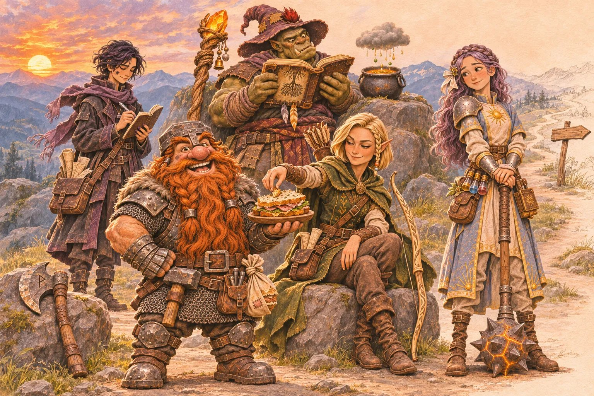
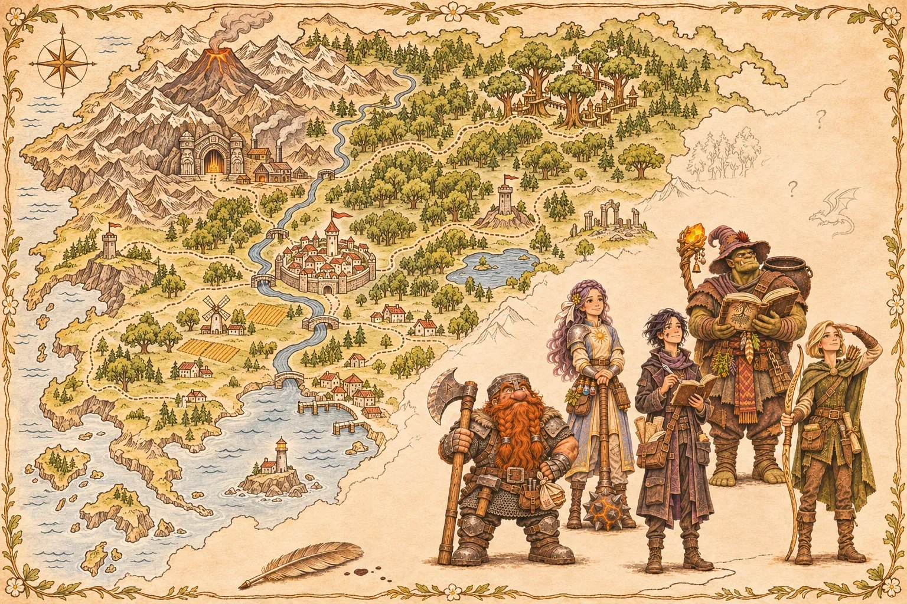
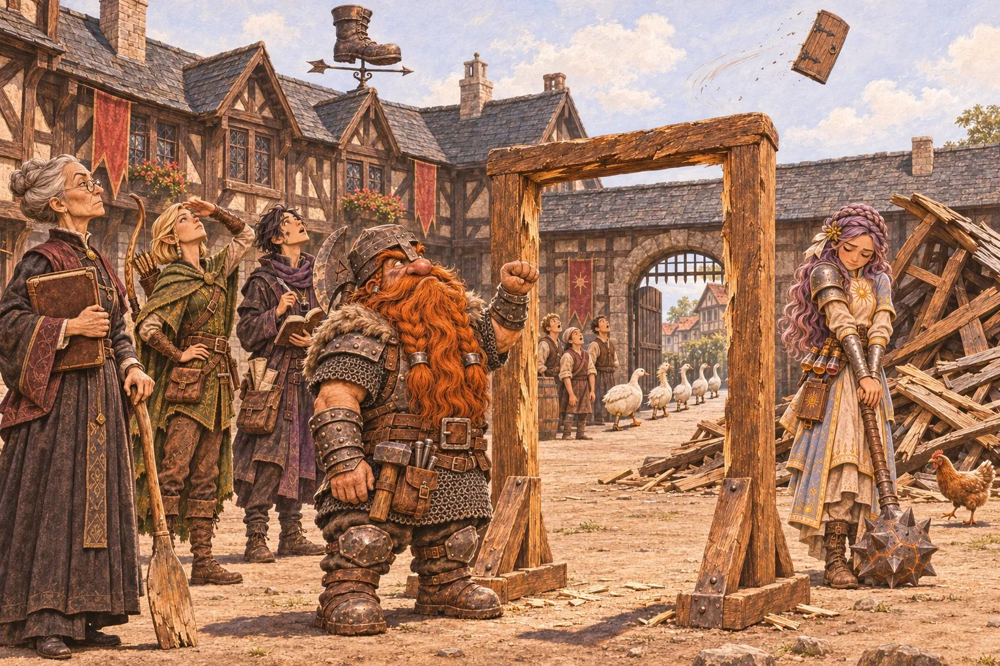

Дамбалдур Трампампури последний бутерброд
повесть о ворчливом гноме, который не любил делиться, и о горе, которая его ждала
Дамбалдур Трампампури последний бутерброд
в которой ворчливый воин, тихий маг, эльфийка-следопыт, храмовница с огненным моргенштерном и орк, не понимающий собственных заклинаний, отправляются в путь. Война началась из-за бутерброда. Бутербродом и закончится
❦
книга первая

Моим детям,
которые слушали эту историю первыми
и всегда спрашивали: «А что было дальше?»
Содержание
- IГде мы?читать →
- IIГусь и короначитать →
- IIIЭкзамен для новичковчитать →
- IVПервое заданиечитать →
- VОркчитать →
- VIБелое пятночитать →
♪ у каждой главы своя музыка — кнопка внизу справа
Карта

Пара слов о мире
Есть на свете земли надёжные, как гномья кладка: их давно нарисовали на картах, по ним ходят телеги, в них пекут хлеб и спорят о соседях. Там стоят людские королевства, шумят эльфийские леса, а в горе-вулкане живут гномы — народ ворчливый, сильный и очень любящий бутерброды.
Но бывает и так: стоит земле остаться без присмотра, стоит в ней завестись чудищам — и она начинает пропадать с карты. Сначала бледнеет, потом становится белым пятном. Тропы в белых пятнах переползают с места на место, а что там водится — не знает никто.
Для таких мест и существует гильдия авантюристов: её люди уходят в белые пятна, чтобы открыть их заново.
А ещё в этом мире идёт самая глупая война на свете. Гномы и эльфы не дружат уже так давно, что никто не помнит, с чего всё началось. Говорят, с бутерброда. Эта книга о том, как война закончилась. И о гноме, который ничего об этом не знал.
Действующие лица

Дамбалдур Трампампур
дворф-воин, умеющий коватьРыжая борода, огромный нос и огромное сердце. Ворчит на всё на свете, кроме бутербродов и друзей.

Римуру
тихий маг, капитанДелает вещи тяжёлыми и лёгкими, плетёт цепи из чернильной тьмы. Улыбается, когда шутят другие.

Элира
эльфийка-лучница, следопытВсегда знает, куда идти. Бережёт друзей больше всего на свете — и таскает кусочки чужих бутербродов.

Теона
храмовница светаЛечит светом, а моргенштерном с огненным сердцем промахивается нарочно, чтобы попасть. И всегда извиняется.

Орк-маг
новый другКолдует по-настоящему, но половину сам не понимает. Хотел бурю — получил тучку, которая льёт суп.
глава первая
Где мы?

Дамбалдур Трампампур проснулся оттого, что ему в бороду падал снег.
Так нельзя, и любой гном вам это скажет. Борода дана гному для красоты, для важности и чтобы хранить в ней мелкий инструмент. А снег в бороде тает, бежит за воротник и портит всё сразу: и красоту, и важность, и инструмент.
Он открыл один глаз и увидел над собой низкое серое небо, похожее на старую перину, из которой потихоньку сыплется пух. Тогда он открыл второй глаз, но небо от этого не исправилось.
— Так, — сказал Дамбалдур. — Кто это сделал?
Ответа не было, только вокруг стояли сосны, высокие и тёмные, засыпанные снегом по самые макушки, и пахло от них холодной смолой. Снег лежал на ветках толстыми белыми подушками, и время от времени какая-нибудь подушка срывалась вниз с мягким «пуф». был кузнецом и не любил, когда криво. Будь у него время и крепкая верёвка, он бы эту сосну выпрямил. За соснами поднимались белые горы с синими тенями в складках, а что было за горами, он не видел, и это ему тоже не понравилось.
Гном сел и проверил хозяйство, как делает всякий порядочный гном, прежде чем начать волноваться. Шлем был на месте, и вмятины на нём все свои, родные: каждую гном знал в лицо и про каждую мог рассказать длинную историю с подробностями. Нагрудник был на месте, и на нём старая руна, выбитая в незапамятные времена: что она значит, гном давно забыл. На поясе висели топор, молот и узелок с бутербродами, а в бороде, где им и положено, лежали напильник, моток проволоки и запасная заклёпка.
Узелок был цел, а в нём четыре бутерброда: с сыром, с луком, с рыбой и с вареньем, четыре разных, как положено. Дамбалдур облегчённо выдохнул, и с ближайшей сосны с перепугу снялась ворона. Улетела она, правда, недалеко: села на соседнюю ветку и с большим интересом посмотрела на узелок, но этого гном не заметил.
— Ну хоть что-то в этом мире правильно, — сказал он.
И тут же нахмурился, потому что слово «мир» прозвучало как чужое. Ни этих сосен, ни этих гор он не знал и понятия не имел, как сюда попал. Вчера был тёплый вечер, друзья рядом и горячий ужин, на который приходилось дуть. А сегодня кругом лес, снег и тишина, какая бывает только там, где сто лет никто не разговаривал: от неё звенит в ушах, как в пустом ведре.
Из снега рядом торчал серый камень, гладкий и круглый, как спина спящего кота. Дамбалдур стянул перчатку и положил на него ладонь. Так гномы здороваются с горами, а гора, если её вежливо потрогать, обычно что-нибудь отвечает: гудит в глубине, теплеет или ворчит, как старый дед за печкой.
Гора под ладонью молчала.
— Спит, — определил он. — Крепко. И незнакомая.
Он надел перчатку, набрал побольше воздуху и крикнул так, как кричат гномы, когда зовут друг друга через три пещеры:
— Эй, есть тут кто-нибудь?
— Есть, — ответили у него над головой. — И этот кто-нибудь хочет знать, почему ты так громко храпишь.
Он задрал голову и увидел Элиру: она сидела на толстой ветке, свесив ноги. Светлые волосы, остриженные ровно по подбородок, у неё растрепались, на плаще лежал снег, а вид у неё был скучающий, как будто сидела она там давно и ждала, когда он проснётся сам.
— Я не храплю, — сказал Дамбалдур. — Я дышу. Мощно.
— С соседней горы от твоего дыхания осыпались камни, — сказала Элира и бесшумно спрыгнула в снег, почти не оставив ямки. — Я тебя по ним и нашла. И встань со снега. Застудишься.
— Я гном! Гномы не застужаются!
— В прошлый раз ты чихал две недели и говорил, что это пыль.
— Это и была пыль, — сказал Дамбалдур, но со снега всё-таки встал.
Он терпеть не мог, когда Элира говорила с ним, как бабушка с непутёвым внуком. На вид ей было лет двадцать, не больше, но сколько на самом деле, не знал никто, даже она сама. Каждый раз гному хотелось ответить ей что-нибудь очень взрослое и умное, но в голову, как назло, лезло только «сама такая».
— Остальных пока нет, — сказала Элира, а пальцы её уже бежали по бусинам в волосах.
Бусин было три, по одной за каждого друга: рыжая, как одна знакомая борода, фиолетовая и тёмная, как чернила. Гном знал эту привычку: бусинами Элира проверяла, все ли на месте, и делала это всякий раз, когда волновалась, хотя вслух ни за что бы не призналась.
— Найдём, — сказал гном. — Ты ведь у нас лучшая в мире ищейка.
— Следопыт, — поправила Элира.
— Я и говорю: ищейка.
Элира фыркнула, присела у сугроба и замерла. Смотрела она на снег так, как Дамбалдур смотрит на хорошо прокованный клинок: внимательно, долго и с любовью. Снег был для неё открытой книгой, где каждый след что-нибудь рассказывал, только читать эту книгу умела она одна.
— Туда, — сказала она наконец. — Кто-то шёл, падал, вставал, снова падал и, кажется, извинялся перед ёлкой.
— Теона, — сказали они хором.
— Идём, — распорядился гном. — Я впереди.
— Ты затопчешь следы.
Дамбалдур задумался, и думать об этом ему было неприятно, потому что ходить впереди он любил больше всего на свете, если не считать хорошей ковки.
— Я впереди, но сбоку, — решил он.
И пошёл впереди, но сбоку, по пояс в сугробе, пыхтя, как кузнечные меха, и очень довольный, что всё так ловко придумал.
Теону нашли у замёрзшего ручья. Она была самая младшая из них и совсем недавно вышла из храмовой школы. Лёд на ручье был зеленоватый, как бутылочное стекло, и под ним что-то тихонько булькало, словно ручей ворочался во сне. Теона сидела на камне в обнимку с моргенштерном и вежливо разговаривала с ёлкой, в которую только что врезалась.
Моргенштерн, если кто не знает, это такое оружие: длинная рукоять, а на конце железный шар в шипах, тяжёлый, как бочонок с гвоздями.
— Простите, пожалуйста, — говорила Теона ёлке. — Я вас совсем не заметила. Вы такая... зелёная.
— Теона! — крикнула Элира.
Теона подскочила, увидела друзей и просияла, и даже ёлка рядом с ней, кажется, повеселела. Она кинулась обниматься и обняла Дамбалдура вместе с моргенштерном, потому что выпустить его из рук не догадалась, и шипы вежливо звякнули о шлем. Шар был тяжёлый и тёплый, и сквозь трещины в нём мерцало оранжевое, как угли в печке.
Гном первым делом осмотрел шар: не треснул ли, не остыл ли. Этот моргенштерн он выковал сам и волновался за него больше, чем за собственный шлем, поэтому постучал по шару костяшкой и послушал, как тот гудит, точно доктор, который слушает больного.
— Цел, — сказал он с облегчением. Потом посмотрел на Теону. — И ты, я вижу, тоже.
— Я думала, я одна, — сказала Теона, и голос у неё дрогнул. — Проснулась, а вокруг только снег. В храме нас учили: если потерялся, сиди на месте и считай. Я сидела и считала до тысячи, чтобы не бояться. Дошла до четырёхсот двенадцати.
— А дальше? — спросила Элира.
— А дальше встала посмотреть, не идёт ли кто-нибудь, и врезалась в ёлку, а ёлка сбила меня со счёта, и пришлось начинать сначала.
Гном хотел сказать, что ёлки сами виноваты, раз растут где попало, но посмотрел на её покрасневший нос и промолчал. Вместо этого он стряхнул снег с её капюшона, да так старательно, будто снег лично его обидел.
Последним нашёлся Римуру, их маг и капитан. Его следы Элира узнала сразу: одна ровная цепочка шла от скалы к скале, как по линейке, и ни разу не вильнула. Римуру не падал, не храпел и ни во что не врезался. Он сидел под скалой, очень прямо, и смотрел туда, откуда они вышли, словно заранее знал, с какой стороны они появятся.
Был он худой, на вид совсем мальчишка, а в длинном тёмном плаще казался ещё тоньше, как ветка, на которую повесили сушиться одежду. Волосы у него были чёрные, как чернила, с тёмно-фиолетовым отливом, а на пальцах темнели чернильные пятна, которые не смывала никакая вода.
— Я знал, что Элира найдёт, — сказал Римуру, поднимаясь. — Поэтому сидел на одном месте. Того, кто бегает, искать труднее.
— А если бы не нашла? — спросила Элира.
Римуру подумал, честно и не торопясь.
— Тогда я бы долго сидел, — спокойно сказал он.
Элира от этих слов стала чуточку выше ростом: капитан сказал, что верил в неё, а ради такого она готова была найти в снегу кого угодно, хоть медведя.
Четверо стояли посреди заснеженного леса и смотрели друг на друга, все четверо, живые и целые. Дамбалдур пересчитал всех по головам три раза, хотя голов было четыре и сбиться было трудно. Только теперь он заметил, что всё это время сжимает топор изо всех сил, чтобы хоть топор не потерялся, и разжал пальцы.
— Ну, — сказал он. — А теперь кто-нибудь скажет мне, где мы?
Никто не сказал, зато все трое, не сговариваясь, повернулись к Римуру.
— Магия спит, — сказал Римуру. — Я её чувствую. Она здесь. Но не отвечает.
Сказал он это ровно, как говорят «пойдёт снег», только гном видел, как капитан сжал пальцы в кулак и разжал, проверяя, не завалялось ли там хоть немножко силы. Для того, кто привык быть самым сильным, это было всё равно что кузнецу взять молот, а молот не поднимается. Гном поправил шлем, хотя шлем и так сидел ровно: так легче было не сказать что-нибудь жалостливое, чего капитан не любил.
— И ещё, — сказал Римуру, помолчав. — Здесь давно никто не ходил. На соснах ни одной зарубки от топора, ни одной тропы. Даже звериные следы старые.
— Следы читаю, — сказала Элира. — А куда нам вообще идти, не знаю.
Для следопыта признаться в таком было хуже, чем для гнома остаться без обеда.
Теона посмотрела на свои ладони, проверяя, на месте ли в них свет, которым её учили лечить, и промолчала. Только крепче прижала к себе моргенштерн, как прижимают кошку, когда страшно.
Дамбалдур это заметил, но говорить ничего не стал, потому что слова в таких случаях выходили у него кривые, как гвозди, забитые левой рукой. Он просто встал так, чтобы загородить её от ветра, и сделал вид, что разглядывает сосну.
— Развели тут, — сказал он. — Сейчас я попрошу удачи, и всё наладится.
— Может, не надо? — быстро спросила Элира.
Гномье колдовство она видела много раз и знала: удача от него приходит всегда, только никогда не приходит одна.
Но он уже начал и сперва побурбурил пальцем по губам: бур-бур-бур. Шлёпнул себя по щекам, по левой и по правой, звонко, на весь лес, и эхо ответило ему из-за ручья. Дёрнул себя за оба уха разом, перекувырнулся через голову прямо в снегу, встал весь белый, как пельмень в муке, и торжественно хлопнул себя по пузу.
Теона смотрела, открыв рот, а Римуру смотрел внимательно и не моргал.
Так гномы колдуют, и что выйдет, не знают даже сами гномы: в этом, говорят, весь интерес.
С сосны сорвалась шишка и упала гному точно в ладонь, а в шишке сидел орех, крупный и целый.
— Ха! — сказал Дамбалдур.
Следом с той же сосны съехал весь снег, разом, одной большой белой шапкой, и весь он достался Элире.
Из сугроба показалась светлая макушка, а за ней два очень спокойных глаза.
— Это на удачу, — объяснил гном.
— На чью? — спросила Элира.
— У него магия не спит, — сказал Римуру и посмотрел на гнома долго, будто запоминал.
Гному от этого взгляда стало неуютно и приятно сразу, потому что так капитан разглядывал только те вещи, которые потом обязательно пригодятся.
Орех Дамбалдур расколол о шлем и поделил на четверых. Вышло по крошке, зато по честной.
— Ладно, — сказал он, жуя. — Значит, будем как все. Ногами. Идём вниз по ручью, вода всегда выводит к жилью!
Никто не двинулся, потому что все смотрели на Римуру.
Римуру поднял голову, а когда он так поднимал голову, все замолкали, даже гном, и знали: сейчас капитан скажет, что делать, и спорить потом не захочется.
— Идём туда, где люди, — сказал он. — Где люди, там дороги. Где дороги, там карты. А по карте поймём, где мы.
Он подумал, послушал, как под зелёным льдом булькает вода, и добавил:
— Вниз по ручью.
— Я так и сказал! — возмутился гном.
— Ты сказал громко, — объяснила Элира, вытряхивая снег из капюшона. — А он сказал, и стало понятно.
— А я сказал первым, — добавил Дамбалдур, чтобы последнее слово всё-таки осталось за ним.
Он развязал узелок, пересчитал бутерброды, хотя прекрасно помнил, сколько их, и объявил:
— Внимание. У нас четыре бутерброда. Делим на неделю, по кусочку в день.
Делил он как кузнец: вытянул из бороды проволоку, отмерил, поставил ногтем зарубки и только после этого взялся за топор. Кусочки вышли одинаковые, ровные, как монеты, и такие же маленькие.
— По справедливости, — сказал гном. — Остальное никто не трогает. Особенно ты, Элира.
Элира невинно посмотрела в небо, хотя небо было серое, совершенно пустое и ничего интересного там не было.
А второй кусочек гном молча подложил Римуру.
— Ты тощий, — сказал он. — Смотреть больно.
Если гнома ловили на доброте, он начинал ворчать вдвое громче, поэтому ловить его никто и не пытался. Римуру молча съел кусочек, потому что давно понял: если гном решил кого-нибудь накормить, проще съесть, чем спорить.
Через снежные горы шли пять дней. Снег был сверху, снизу, в сапогах и за шиворотом, а по утрам брови у всех четверых белели от инея, и гном говорил, что они похожи на четырёх маленьких дедушек.
Римуру шёл впереди и за день говорил слов десять, не больше. Иногда он останавливался, смотрел на небо или на камни и молча сворачивал в сторону, хотя прямая дорога была ровнее. В первый раз гном заворчал, что так они и к весне до людей не дойдут. Через час выяснилось, что там, куда капитан не пошёл, был обрыв, присыпанный снегом, как пирог сахарной пудрой, и гном ворчать перестал, на целых полдня.
— Откуда вы знали? — спросила Теона.
— Снег там лежал гладко, — сказал Римуру. — Слишком гладко.
Элира на каждом привале забиралась повыше, на скалу или на сосну. Оттуда ей было видно всех своих сразу, а когда все свои видны, ей становилось спокойно.
А Дамбалдур здоровался с каждой горой: клал ладонь на камень, слушал и шёл дальше. Теона каждый раз спрашивала, ну что там, и гном отвечал одно и то же:
— Спит. Тут все спят. Сонное царство.
В первый же день Теона откопала под снегом травку от кашля, серую и мохнатую, как мышиное ушко, и обрадовалась ей, как подарку. Кашля ни у кого не было, но травку она всё равно взяла, а Элира показала ей, где растёт ещё, и сама нарвала целый пучок. Гном на всякий случай отошёл от них подальше и до вечера старался не кашлять, чтобы его не начали лечить.
А хуже всех был второй день, потому что на второй вечер кончились бутерброды.
— Как это кончились? — спросила Теона. — Мы же делили на неделю.
Дамбалдур покраснел до самой бороды, а борода у него была рыжая, так что покраснел он, можно сказать, целиком.
— Я делил, — сказал он с достоинством. — И проверял, не испортились ли. Каждый. Тщательно.
— И как? — спросила Элира.
— Не испортились, — вздохнул гном. — Просто неделя получилась короткая. Гномья неделя. Она быстрее.
Элира нагнулась и подняла из снега чёрное блестящее перо, воронье. На пере висела хлебная крошка с капелькой варенья.
Дамбалдур сделал вид, что не видит никакого пера. Признаться, что гнома, кузнеца и воина обокрала обыкновенная ворона, было куда хуже, чем прослыть обжорой, и он решил, что обжорой быть почётнее.
Элира повертела перо в пальцах и молча спрятала его в рукав. Подшучивать над гномом Элира обожала, но своих не выдавала никогда. И всё-таки она не удержалась и прыснула прямо в тот рукав, где лежало перо.
Римуру ничего не сказал, но глаза у него на миг стали тёплые. Улыбался капитан редко, только когда в команде случалась какая-нибудь хохма, а сегодня хохмой был гном.
А Теона ничего не сказала, только вздохнула, совсем тихо, и у неё в животе заурчало, тоненько и жалобно, как котёнок под дверью.
От этого звука гному стало хуже, чем от любой ссадины, и он покраснел ещё сильнее, хотя сильнее было уже некуда.
— Что случилось? — спросил он сердито.
— Ничего, — сказала Теона. — Это не я. Это живот.
— Всё, — сказал Дамбалдур и встал. — Я пошёл. Всё исправлю.
Элира спросила, куда это он, но гном уже шагал к ручью.
Ручей здесь был широкий, с толстым синеватым льдом, под которым, если приложить ухо, было слышно, как сонно шевелится вода. Гном постоял над ним, примерился, как кузнец перед первым ударом, и стукнул по льду кулаком, совсем чуть-чуть, как ему казалось.
Лёд не треснул. Лёд взорвался. Вверх полетели куски, брызги и три сонные рыбы, а сам гном от собственного удара сел на лёд и поехал. Спиной вперёд, вниз по ручью, крутясь, как пуговица на тарелке, до самого поворота, и там скрылся, а эхо ещё долго повторяло за ним «о-о-ой».
Его не было так долго, что Теона начала считать вслух, а Элира залезла на самый высокий камень.
Когда Дамбалдур вернулся, отряхивая бороду от ледяной крошки, рыбы уже лежали на берегу: две на снегу, а третья у Римуру в капюшоне. Римуру вынул её двумя пальцами, спокойно, как вынимают из кармана носовой платок, и положил к остальным.
— Вот, — сказал гном. — Исправил. Чего смотрите? Я не для вас старался. Мне просто лёд не понравился.
Рыбу испекли на углях, и пахла она дымом и рекой. Теона съела свою до последней косточки и уснула раньше, чем стемнело. А гном долго сидел у огня, сердито дул на кулак и делал вид, что кулак у него ни капельки не болит.
В ту же ночь Элира нашла следы, огромные и глубокие, словно кто-то ронял в снег бочки, по одной на каждый шаг. Она долго стояла над ними, трогала пальцами края и нюхала воздух, а вернувшись, сказала только:
— Ночуем без костра.
Гном хотел поспорить, но посмотрел ей в лицо и не стал, потому что, когда Элира переставала шутить, спорить с ней не хотелось даже ему.
Без костра было совсем холодно, и они сидели вчетвером, прижавшись спинами к скале, а холод забирался под плащи, как мыши в чулан. Теона проснулась от холода и стучала зубами, и от этого у неё на коленях тихонько позвякивал моргенштерн.
— Сейчас согрею, — шепнул Дамбалдур.
Элира молча отодвинулась от него подальше: она уже видела, как гном кого-нибудь согревает.
Колдовать громко было нельзя, и он колдовал шёпотом: тихонько побурбурил по губам, бур-бур, дёрнул себя за левое ухо и трижды погладил пузо, как кота.
Борода у него стала тёплая, по-настоящему тёплая, как камень у горна, у которого весь день работали, и Теона ахнула и протянула к ней руки.
И тут борода засветилась ровным рыжим светом, на всю скалу, как фонарь на ярмарке.
— Погаси, — прошипела Элира.
— Я не знаю как!
— Тебя видно с той стороны ущелья!
Элира сдёрнула с себя плащ и накрыла бороду вместе с гномом, и под плащом сразу стало светло и уютно, как внутри фонаря. Туда немедленно залезла Теона, а за ней, помедлив, и Римуру, сложившись почти вдвое.
Сама Элира осталась снаружи, на холоде, сторожить.
— Сиди и не свети, — сказала она.
— Как я могу не светить, если я свечу? — глухо спросили из-под плаща.
Под плащом было тесно, пахло дымом, мокрой шерстью и немножко печёной рыбой, и скоро там стало совсем тихо.
— А мы вернёмся домой? — спросила Теона шёпотом.
Никто не ответил сразу, потому что каждый думал об этом уже два дня, только вслух не решался.
— Звёзды здесь другие, — сказал Римуру. Он сидел у самого края и смотрел в щёлку между плащом и скалой. — Ни одной знакомой. Я смотрел каждую ночь.
Теона сглотнула так громко, что это услышала даже Элира снаружи.
— Значит, выучу эти, — сказал Римуру так же просто, как говорил «вниз по ручью».
Гном сразу поверил, что выучит, потому что если капитан что-нибудь решал, то делал, хоть за год, хоть за десять.
— Правило девятое, — сказала Теона дрожащим голосом. — Храмовница не боится темноты.
— А ты боишься? — спросил гном.
— Правило не говорит, что нельзя.
— Я один раз уже потеряла всех друзей, — сказала Элира снаружи, и бусины в её волосах тихонько стукнули друг о друга. — Давно. Больше не собираюсь. Куда вы, туда и я. А где дом, разберёмся.
— Разберёмся, — сказал Дамбалдур. — Вот найду того, кто нас сюда закинул, и поговорю с ним. Коротко.
Он подвинулся и подставил Теоне плечо, широкое, с меховым воротником, который пах дымом.
Римуру отодвинулся от щёлки и уступил её Теоне.
— Посчитай мне звёзды, — сказал он. — Те, что поярче. Мне нужно знать, сколько их.
Теона приникла к щёлке и стала считать, шёпотом, загибая пальцы. На двадцать третьей звезде голос у неё стал тише, на двадцать седьмой совсем пропал, и она уснула у гнома на плече.
Римуру не спал: он снова сидел прямо и смотрел в щёлку, в темноту, туда, где Элира нашла следы. Гном знал, что капитан всегда засыпает последним, если вообще засыпает.
Тогда гном высунул из-под плаща руку и потянул Элиру за рукав.
— Залезай. Тут место есть.
— Я сторожу.
— Сторожи отсюда. Застудишься.
Элира помолчала, наверное, вспомнила про две недели и пыль. И залезла.
Борода светила до самого утра, всё слабее и слабее, как догорающая свечка. А гном ещё долго лежал с открытыми глазами и думал про дом. Какой дом и где он, Дамбалдур не знал, просто думал. Тёплое такое слово, как варежка, которую сушили на печке.
На четвёртый день они шли по широкому белому склону, где сугробы лежали горбами, круглые и одинаковые, как караваи на противне. Ветер дул в спину, снег скрипел под сапогами, и гном как раз объяснял Теоне, почему настоящий топор закаливают в масле, когда сугроб рядом с ними встал.
Он был втрое выше Дамбалдура, и белая косматая шерсть свисала с него клочьями, как старый снег с крыши. Руки у него доставали до земли, пахло от него мокрой псиной и прокисшей варежкой, а сверху на них смотрели два маленьких синих глаза, глупые и голодные.
— Тролль, — сказала Элира и выхватила стрелу.
Второй сугроб тоже встал, а за ним и третий.
Элира молча достала ещё две стрелы.
— Строимся! — скомандовал Дамбалдур и перехватил топор. — Я в середине, Элира...
— Нет, — сказал Римуру.
И гном замолчал, не договорив, кто где стоит.
— Ты впереди, один, — сказал Римуру. — Они пойдут на самого громкого. Элира, на камень. Теона, справа. Целься в тролля.
Элира в два прыжка взлетела на большой валун.
— Она же промажет! — сказал гном.
— Да, — сказал Римуру.
Теона вежливо кивнула, потому что капитан был совершенно прав.
Первый тролль выдрал из склона глыбу льда размером с сундук и швырнул.
Глыба летела прямо в Теону, а Теона стояла с моргенштерном в руках и смотрела на неё круглыми глазами. В храме её учили многому, но про летающие сундуки там не рассказывали.
Дамбалдур прыгнул ей навстречу, глыба ударила его в шлем и раскололась на куски, а он покатился по снегу, как бочонок с горки.
— Новая вмятина, — сообщил он, поднимаясь и ощупывая шлем. — Вот теперь я злой.
Тролль, который кинул глыбу, посмотрел на свои пустые лапы, заглянул себе под ноги и оглянулся через плечо. Он никак не мог понять, куда она делась, и, похоже, подозревал, что её кто-то стащил.
Пока он искал, Элира выстрелила, стрела ушла троллю в плечо, и тролль заревел, а с соседней скалы от его рёва съехал снег.
Вторую стрелу Элира пустила в тролля, который подкрадывался к гному сзади, но стрела отскочила от его шерсти, как от валенка.
— Сзади! — крикнула Элира.
Но было поздно: второй тролль уже сгрёб Дамбалдура в охапку и поднял, как мешок с картошкой.
— Поставь, где взял! — заорал гном, дрыгая ногами в воздухе. — Я тебе не полено! И кто так хватает? Локти шире! Спину ровнее!
Тролль не поставил. Он сжал лапы, медленно и сильно, как сжимают снежок, у гнома затрещали ремни нагрудника, и гном перестал кричать, потому что кричать стало нечем: воздуха не было.
Кольчуга под нагрудником жалобно звякнула, одно колечко лопнуло и улетело в снег, а Теона закричала его имя на весь склон.
— Пусти, — прохрипел Дамбалдур. — Ты мне… кольчугу помнёшь! Я её сам плёл!
Он упёрся локтями и надавил плечами, и лапы тролля медленно, со скрипом, разошлись в стороны, как старые ворота. Гном выскользнул, ухватил тролля за косматую лапу, крякнул и перебросил его через себя.
Тролль пролетел над сугробом, кувыркнулся и съехал по склону на спине, как на санках, и вид у него при этом был почти довольный.
А гном не рассчитал: он крутанулся вместе с троллем, отпустил его на полкруга позже, чем надо, и сам улетел в другую сторону, прямо в сосну. Сосна загудела, как колокол.
Элира опустила лук и посмотрела на гнома внимательнее, чем смотрела даже на следы, потому что следы она понимала, а как гном только что поднял тролля, понять не могла.
— Ты сейчас поднял тролля, — сказала она.
— Он сам, — отмахнулся гном, держась за сосну, чтобы та перестала кружиться. — Поскользнулся.
И, кажется, сам в это верил.
Первый тролль, тот, что со стрелой в плече, бросился на них, и тут Теона подняла моргенштерн.
— Извините, пожалуйста, — сказала она троллю. — Я сейчас буду вас бить. Мне очень неловко.
Шар загудел, как печка, в которую подбросили дров, и сквозь трещины полыхнуло оранжевым.
С Теоной всегда так: куда она целится, туда не попадает. Зато уж куда попадает, там потом долго ничего не растёт. Хочешь попасть в лёд, целься в тролля, и Теона так и сделала.
Шар ударил в лёд прямо у ног тролля. Лёд зашипел, как сковородка, на которую плеснули воды, из-под удара рванул горячий пар, и на миг ничего не стало видно. Когда пар рассеялся, тролль стоял мокрый, с голым розовым боком, где растаяла шерсть, и с ужасом смотрел на Теону.
— Я же предупреждала, — виновато сказала Теона.
Тролль попятился, прикрывая голый бок лапой. Элира смотрела на него с камня так же, как утром первого дня смотрела на снег, и поняла главное первой.
— Они боятся тепла! — крикнула она.
Третий тролль всё это время сидел в снегу, крепко зажмурившись: видно, думал, что раз он никого не видит, то и его никто не видит. Теперь он открыл глаза, встал и поднял над головой огромный снежный ком, целясь в Римуру.
Римуру стоял за камнем и не двигался, хотя тролль уже замахнулся.
Тогда Римуру нагнулся, слепил снежок, маленький и самый обыкновенный, и бросил его. Бросил спокойно, словно так и было задумано с самого утра.
Снежок полетел, а на середине пути вдруг потяжелел и пошёл вниз, как камень. Он ударил тролля в живот с глухим «бумм», и тролль охнул, уронил свой ком себе на голову и сел.
Римуру смотрел на свою руку, а на снегу у его ног, там, где он лепил снежок, темнело маленькое чернильное пятнышко.
— Это ты? — спросила Элира.
Римуру не ответил: он смотрел на ладонь так, словно она ему что-то сказала, а потом осторожно сжал её, как будто поймал птицу, и спрятал руку в рукав. Лицо у капитана осталось спокойным, но гном поспорил бы на свою бороду, что тот рад, просто не показывает.
— Попало же, — сказал гном. — Остальное потом разберём.
Тролли сбились в кучу, все трое: мокрый, сидячий и тот, что съехал на спине и выбрался обратно весь в снегу. Они заворчали и снова пошли вперёд, медленно, плечом к плечу.
Римуру быстро оглядел склон, троллей и лёд, который ещё дымился после первого удара.
— Теона. Самый большой.
Сказал он это тихо, а Теона уже поднимала шар. Она прицелилась в самого большого тролля, старательно, даже высунула кончик языка.
Шар ударил в склон у них под ногами. Пар рванул столбом, и лёд под троллями стал мокрый и гладкий, как стекло. Все трое сели и поехали вниз, сначала медленно, потом быстрее, и с воем скрылись в метели. Последним уезжал тот, что с голым боком, и лицо у него было обиженное, как у кота, которого вынесли из кухни.
— Я ковал его для врагов, — сказал Дамбалдур, гордо глядя им вслед. — Но для льда, выходит, тоже годится.
Гном сел в сугроб: борода у него была в снегу, шлем съехал на нос, а из-под шлема по лбу бежала тонкая красная струйка. Теона опустилась рядом, положила ладонь ему на лоб и закрыла глаза. От ладони пошло тёплое золотое свечение, слабенькое, как свеча за окном в метель, и ссадина затянулась, но не до конца: осталась розовая полоска.
— Получилось, — удивлённо сказала Теона. — Свет ещё со мной. Только его мало.
— Хватит и такого, — сказал Дамбалдур.
— На что жалуетесь? — строго спросила Теона. Так в храме учили спрашивать больных, даже если больной сидит в сугробе и сам прекрасно знает, на что.
— На троллей, — сказал гном.
Теона кивнула, будто это был очень правильный ответ.
Римуру тем временем походил по снегу, нагнулся и молча протянул гному лопнувшее колечко от кольчуги. Как он нашёл его в целом сугробе, никто не понял, и гном от растерянности сказал ему «спасибо» вежливо, совсем как Теона.
— Я считаю, это была блестящая победа, — объявил он, пряча колечко в бороду, поближе к заклёпке. — Особенно моя часть.
— Твоя часть, — сказала Элира, спрыгивая с камня, — это когда тебя носили на руках?
— Это была военная хитрость. Я подбирался поближе.
На пятый день горы кончились: они поднялись на перевал, узкий, как спина у лошади, и остановились, потому что идти дальше сразу никто не смог. Внизу лежала широкая долина, синяя от вечерней тени, с тёмными пятнами лесов и серебряной ниткой реки. А за долиной, выше облаков, стояла гора.
Огромная и тёмная, как старое железо, с острой вершиной, похожей на сломанный зуб, а над вершиной вилась тонкая струйка дыма. На склонах блестели чёрные гладкие скалы, точно кто-то пролил стекло, а оно взяло и застыло. А у самого подножия, далеко-далеко, мерцали тёплые огоньки, маленькие, как искры от костра.
— Обсидиан, — сказал Римуру. — Камень из огня. Это вулкан.
Вулканом называют гору, у которой внутри огонь, и иногда этот огонь выходит наружу погулять.
Дамбалдур снял шлем и просто держал его в руке, а снег падал ему на рыжую макушку, и он этого не замечал.
Элира и Теона переглянулись, и обе испугались куда сильнее, чем троллей, потому что гном молчал. А гном не молчал никогда: он спорил, шутил, жевал, что-нибудь чинил и чем-нибудь был недоволен, и даже во сне бормотал, что подушку набивали криво.
Ветер донёс со стороны горы запах: дым, горячий камень и железо.
Запах кузницы.
У гнома защипало в носу. Он смотрел на огоньки у подножия, и ему хотелось туда, как хочется под одеяло, когда замёрз. Но этой горы он не знал и был уверен, что видит её первый раз в жизни, поэтому совсем непонятно было, почему так щиплет в носу.
Он присел, стянул перчатку и положил ладонь на камень перевала.
Камень был тёплый.
Тёплый изнутри, как бок печки, в которой с вечера пекли хлеб, хотя кругом лежал снег.
— Не спит, — сказал Дамбалдур очень тихо.
— Дамбалдур? — Элира тронула его за плечо. — Ты как?
— Нормально, — сказал он и откашлялся. — Гора как гора. Большая. Дымит. Ничего особенного.
Он постоял ещё немного, а потом сел в снег, обхватил колени, перекатился бочонком туда и обратно, трижды дунул себе в бороду и сказал горе: «Здрасьте». Зачем, он и сам бы не объяснил: просто с горой, которая не спит, нехорошо было не поздороваться как следует.
У всех четверых развязались шнурки, разом, на обоих сапогах, словно кто-то невидимый дёрнул за все шестнадцать кончиков. Теона наступила на свой шнурок и села в снег.
А следом стих ветер, сразу, точно его заперли в сундук. Снег перестал лететь в глаза, и тучи над тропой разошлись в стороны, как занавески на окне, так что вся дорога вниз стала видна до самого леса.
— Ой, — сказала Теона из сугроба. — У вас получилось!
— В лесу была шишка, — сказал Римуру, завязывая узел. — А тут целый ветер.
— А в следующий раз можно сразу ветер? — спросила Элира, затягивая бантик. — Без шнурков?
Дамбалдур долго разглядывал свои ладони, широкие, в мозолях от молота, и ничего особенного в них не находил.
— Повезло, — сказал он, натянул перчатку и поскорее надел шлем, чтобы никто не разглядел его лица. — Пошли. Нам к людям.
И они пошли вниз, в долину, мимо горы.
Он оглянулся только один раз. Огоньки у подножия мигнули.
Гора смотрела ему вслед.
глава вторая
Гусь и корона

Внизу снега почти не было, зато был голод.
Снежные горы остались позади, и дорога шла по бурому прошлогоднему лесу, где из-под мокрых листьев торчали камни, а в канавах ещё лежали серые дырявые сугробы, похожие на старые подушки. Где-то стучал дятел, и это был единственный звук в лесу, который не напоминал гному про еду, потому что даже ручей в овраге булькал, как суп в котелке.
Три дня без еды гном пережить может, а вот пережить их молча не может ни один гном на свете. Дамбалдур шёл последним и ругал всё подряд. Дорогу он ругал за то, что её клали без уровня, и она то горбилась, то проваливалась, как старый матрас. Кусты ругал за то, что растут как попало. А больше всех доставалось собственному животу, который пел на весь лес и ни разу не попал в ноты.
Впереди него шла Теона с моргенштерном на плече. Она спотыкалась на ровном месте, а перед кочками больше не извинялась, потому что сил у неё не осталось даже на это.
Гном замолчал на полуслове, догнал Теону и молча снял у неё с плеча дорожную сумку. Сумка была лёгкая, почти пустая, но гном повесил её себе на спину с таким лицом, словно взвалил наковальню.
— Тяжёлая, — пожаловался он на пустую сумку и понёс её дальше.
Теона открыла рот, чтобы сказать спасибо, но гном уже ушёл вперёд и громко ругал пень, который вырос посреди дороги без всякого спроса, так что спасибо пришлось отложить.
Ещё через десяток шагов он встал посреди дороги и упёр руки в бока.
— Так, — сказал он сердито. — Хватит, сейчас я всё устрою.
Элира молча натянула капюшон до самого носа. На всякий случай: в прошлый раз, когда гном что-то устраивал, ей на голову съехал весь снег с большой сосны.
Дамбалдур подёргал себя за бороду, побурбурил пальцем по губам, бур-бур-бур, крутанулся на пятке, шлёпнул себя по пузу, как по бочке, и сказал:
— Оп!
Теона смотрела во все глаза, а Римуру смотрел внимательно и не мигая, как смотрят на фокус, когда хотят понять, где у фокусника спрятан кролик. Сначала не случилось ничего, а потом слева потянуло тёплым.
Пахло свежим хлебом, только что из печи, с хрустящей коричневой корочкой и мягким горячим мякишем, от которого идёт пар, если разломить. Запах был густой и тёплый, хоть режь его ножом и мажь маслом.
Все четверо разом повернули головы налево.
— Хлеб с тмином, — сказала Теона и вздохнула. — У нас в храме такой пекли по четвергам.
— Там печка, значит, там люди, — сказал Римуру. — Идём налево.
— Вот, а вы боялись! — сказал Дамбалдур.
Плохое выяснилось через сто шагов: запах не отставал. Он бежал рядом, как щенок на верёвочке, залезал в нос и рассказывал про корочку, про мякиш и про то, как всё это хрустит. Есть от него хотелось в десять раз сильнее, а до настоящей печки было ещё полдня ходу. Хуже всех пришлось Элире, потому что следопыту нос нужен, как кузнецу молот, а её нос теперь чуял только хлеб, хлеб и снова хлеб.
— Выключи, — попросила она из-под капюшона. — Тут тролль пройдёт, а я подумаю, что это булка.
— Оно не выключается, так что шевелите ногами, — мрачно сказал гном.
Все шевелили ногами, и только Теона иногда тихонько, чтобы никто не заметил, нюхала воздух и улыбалась. Ей, похоже, было всё равно, наколдованный это хлеб или настоящий: пахло четвергом.
Запах шёл за ними до самого полудня. К этому времени дорога вывела их на край обрыва и побежала по нему, узкая, как полка в чулане. Справа стоял густой тёмный лес, а слева земля обрывалась вниз, и далеко внизу, так далеко, что кружилась голова, шумела по камням серая река. Камешки из-под сапог то и дело срывались с края и падали вниз долго-долго, и Теона успевала испугаться за каждый. Она шла у самого леса и на обрыв старалась не глядеть.
А потом Элира остановилась: нос ей сейчас не помогал, зато уши у эльфов длинные и острые, и для них даже мышь в траве топает, как лошадь.
— Тихо, — сказала она. — Не мы одни его нюхаем.
В кустах у дороги затрещало. Треск был тяжёлый и неторопливый, словно сквозь лес кто-то нёс шкаф. Кусты раздвинулись, и на дорогу вышел кабан.
Ростом он был с корову. Щетина на загривке стояла дыбом, серая и жёсткая, как проволока, а из пасти торчали два жёлтых клыка, загнутых, как серпы. Маленькие глазки глядели сердито и жадно. Кабан поднял пятачок и шумно, со свистом, потянул воздух.
Гном оглядел щетину знающим глазом.
— Хорошая, — сказал он с уважением. — Из такой щётки для горна вяжут, и годами служат.
— Он не на продажу, так что отойди от него, — сказала Элира.
Но кабан уже нашёл, что искал. Пятачок повернулся к гному и замер, потому что запах хлеба шёл от гнома, от его бороды и усов, как дым от костра.
Кабан опустил голову и побежал.
Дамбалдур успел только расставить ноги. Он поймал кабана за оба клыка, и его отбросило на шаг, потом ещё на шаг, а сапоги пропахали в дороге две глубокие борозды, как плуг на огороде.
В горах он перебросил через себя тролля, но тогда он был сыт. Теперь три голодных дня сидели у него в руках и в коленях, и колени дрожали, как студень на тарелке. Кабан сопел, упирался и толкал, и гном ехал назад, медленно, шаг за шагом.
А сзади, в трёх шагах, был обрыв.
Элира натянула тетиву, целясь кабану в глаз, и опустила лук: прямо перед кабаньим глазом торчал гномий шлем. Она шагнула вправо, потом влево, но шлем каждый раз оказывался ровно там же, где глаз.
— Не могу, ты мешаешь! — сказала она. — Он идёт на запах, а запах на тебе!
— Я заметил! — прохрипел гном.
Римуру не двинулся с места. Смотрел он не на кабана, а на обрыв, на сапоги гнома и на Теону, и гном, хоть ему было совсем не до того, краем глаза увидел его лицо. Такое лицо бывало у Римуру, когда он считал, а считал он всегда быстрее всех. Потом он сказал, не повышая голоса:
— Теона. Пояс.
Гном проехал ещё шаг, и до обрыва осталось два.
Теона бросила моргенштерн на дорогу, потому что поднять его у неё уже не было сил. Она подбежала сзади, схватила гнома за пояс обеими руками и упёрлась.
— Правило шестое, — сказала она сквозь зубы. — Своих не отпускают.
И гном перестал ехать. Сапоги Теоны ушли в дорогу по щиколотку, и кабан сопел и толкал, но сдвинуть их не мог ни на палец. Гном почувствовал спиной, как держат его две тонкие руки, и удивился. Держали они крепче, чем дубовая доска держит гвоздь.
Кабан фыркнул, сунул пятачок гному прямо в бороду, втянул воздух и задрожал от жадности. С клыков на рыжую бороду потекло.
— Не слюнявь! — взревел Дамбалдур. — Я её два дня расчёсывал!
— Запах твой, — сказал Римуру. — Ты его сделал, ты и убирай.
— Чем, если у меня руки заняты?!
— Руки не нужны, — сказал Римуру.
Гном моргнул: а ведь правда, обычно гномы колдуют руками, но, если очень надо, умеют и без рук. Дамбалдур скосил глаза к носу, побурбурил губами безо всякого пальца, бр-р-р, прямо кабану в пятачок, громко чихнул и сказал:
— Кыш!
Запах хлеба соскочил с гнома весь, разом, как кот с печки, и уселся кабану на спину.
Кабан замер, понюхал воздух и оглянулся на собственный хвост, потому что хлебом теперь пахло оттуда. Кабан рванул за хвостом и выдернул клыки из рук гнома. Хвост пах хлебом и убегал. Кабан закружился на месте, всё быстрее и быстрее, так что из-под копыт полетели камешки, а потом с визгом умчался в лес догонять самого себя.
Стало тихо. Только внизу шумела река, и где-то в чаще, всё дальше и дальше, визжал кабан, который никак не мог догнать свой хвост.
Гном сел прямо на дорогу, и руки у него тряслись. На нагруднике белела свежая царапина от клыка, и прошла она у самой старой руны. Гном проверил руну пальцем, а когда убедился, что она цела, выдохнул длинно-длинно.
Теона отпустила его пояс и села рядом.
— Я, кажется, порвала вам ремень, — сказала она.
— Ремень починю, — сказал гном и помолчал. — Держала хорошо.
Больше он ничего не сказал, но Теона порозовела до самых ушей, потому что «хорошо» от гнома стоит дороже, чем «замечательно» от кого-нибудь другого.
Римуру подошёл к брошенному моргенштерну. Поднять его он, конечно, не смог, зато упёрся плечом и перекатил шар поближе к Теоне, как катят бочку, чтобы ей не пришлось за ним тянуться.
Гном понюхал свою бороду и скривился. Запах хлеба ушёл вместе с кабаном, а от гнома теперь пахло кабаном, крепко, на всю дорогу, как из хлева.
У Элиры снова заработал нос. Первое, что он ей сообщил, ей совсем не понравилось, и Элира молча перешла на другую сторону дороги.
— Я, между прочим, всех спас, — сказал ей вслед гном.
— Спасай оттуда, — сказала Элира. — Я тебя и так хорошо слышу.
Земля людей началась с фермы.
Сначала был забор, длинный и кривой, из серых жердей, и Дамбалдур только вздохнул, глядя на него. За забором тянулось поле, где из-под последнего снега торчала жёлтая щетина прошлогодней соломы, а дальше стоял низкий дом с соломенной крышей, похожей на мохнатую шапку. Из трубы поднимался настоящий дым, и пахло настоящим хлебом, коровой и мокрыми досками. После трёх голодных дней это был самый лучший запах на свете.
Выскочил пёс, лохматый и весёлый, понюхал бороду Дамбалдура, чихнул и с визгом удрал за сарай. Видно, с кабанами он уже встречался и дружить с ними не собирался.
А на заборе висели дети. Их было трое, и все трое смотрели на путников во все глаза, как на ярмарочное чудо.
— Мама! — заорал самый маленький. — Мама, там ходит ёжик в железе!
— Я не ёжик, я гном! — возмутился Дамбалдур.
— Мама, ёжик говорит, что он гном!
Маленький слез с забора, подошёл и постучал кулаком по шлему, и шлем загудел.
— Звенит, — сообщил маленький.
— Конечно, звенит, — сказал Дамбалдур. — Хорошая сталь всегда звенит, а плохая брякает, как пустое ведро. Стучи вот сюда, тут звонче.
И подставил шлем другим боком. Маленький постучал, послушал и остался доволен, а гном остался доволен ещё больше, потому что в этих краях наконец нашёлся человек, который понимает в шлемах.
Средний мальчик тем временем ходил кругами вокруг Теоны и не сводил глаз с её моргенштерна.
— А можно подержать? — спросил он.
— Нельзя, он тяжёлый, — серьёзно сказала Теона.
— Ты же держишь.
— Я привыкла.
Она поставила шар на землю, чтобы мальчик посмотрел поближе, и земля под шаром просела. Мальчик попробовал качнуть его двумя руками, потом плечом, потом спиной, пыхтя и краснея, а шар этого даже не заметил.
— Я его сам ковал, — гордо сказал гном, не убирая шлема из-под кулака маленького. — А внутри у шара жар, как в горне.
— А можно потрогать жар? — спросил мальчик.
— Нельзя, — хором сказали гном и Теона.
Девочка постарше на моргенштерн даже не взглянула. Она смотрела только на Элиру: на светлые волосы до подбородка, на лук за спиной, на бусины и больше всего на острые уши, которые торчали из волос, как два листика.
— Ты настоящая эльфийка? — шёпотом спросила она.
Элира присела, чтобы оказаться с девочкой вровень, и ответила так же шёпотом:
— Самая настоящая.
— А правда, что эльфы воруют бутерброды?
Дамбалдур так и застыл с подставленным шлемом.
— Так дедушка говорит, — объяснила девочка. — Что давным-давно эльфы стащили у гномов самый большой бутерброд на свете. И с тех пор гномы с эльфами воюют.
Дамбалдур медленно повернулся к Элире, а Элира медленно отвела глаза.
— Я такого не помню, — сказала она. — В мои-то годы много чего не помнишь.
Сказала она это легко, а пальцы её сами нашли в волосах бусины.
— А я знаю, что это правда, — вдруг сказал Дамбалдур. — Откуда знаю, не знаю. Вот тут знаю.
Он постучал кулаком по нагруднику, там, где сердце, и нагрудник гулко отозвался, как пустой котёл. Котёл был не только пустой, но и голодный. Живот гнома тут же поддакнул долгим жалобным урчанием.
Мама детей оказалась женщиной доброй и занятой: в одной руке ухват, в другой ведро. Ёжику в железе и его друзьям она вынесла кувшин молока и горячую лепёшку на четверых. Палец у неё был замотан тряпкой.
— Даром брать нельзя, это правило второе, — сказала Теона. — Дайте, пожалуйста, руку.
Она взяла палец в свои ладони и закрыла глаза. Под тряпкой коротко мигнуло золотым, как солнечный зайчик, и порез затянулся.
Хозяйка долго смотрела на палец, сгибала его и разгибала, а потом ушла в дом и вынесла вторую лепёшку.
— Правило второе выполнено, — серьёзно сказала Теона. — Лечение окончено, спасибо за лепёшку.
Кувшин Римуру пустил по кругу и следил, чтобы каждый отпил по четыре глотка, не больше и не меньше. Гном, который в делёжке понимал толк, считал чужие глотки очень придирчиво, но придраться так и не смог. Молоко было холодное, из погреба, густое, как сливки, и у гнома от него выросли белые усы поверх рыжих.
Лепёшки делил Дамбалдур, и резал он их топором, впервые в жизни на глаз, без проволоки и зарубок, потому что живот торопил и ждать не желал. Себе он положил самый маленький кусок.
— Я не голодный, — сказал он и отвернулся, чтобы никто не видел, как он смотрит на чужие куски.
К вечеру они добрались до таверны.
Она стояла у самой дороги, кривая и тёплая, как старый валенок на печке. Окна светились жёлтым, из трубы шёл дым, а над дверью на цепях качалась вывеска, на которой был нарисован гусь в короне. Гусь глядел важно, как настоящий король, хотя корона у него съехала набок. Изнутри пахло луковой похлёбкой и хлебом, на этот раз настоящим.
Дамбалдур остановился и оглядел таверну снизу доверху.
— Угол завален, крыша просела, — сказал он. — Трубу клал человек, который печку видел один раз, издалека. Заходим, пока не рухнуло.
Внутри было людно, шумно и жарко. Под низким закопчённым потолком висели связки лука и сушёных грибов, в очаге на вертеле крутился и шипел толстый окорок, а за длинными столами сидели возчики, пастухи и торговцы. Но стоило четверым войти, как шум стих, словно его прихлопнули крышкой. Все уставились на острые уши Элиры, на рыжую бороду Дамбалдура и снова на уши. Кто-то уронил ложку, и она звякнула на весь зал.
Дамбалдур прислонил топор к стойке. На стойке сидел деревянный гусь в короне, такой же, как на вывеске, только с отбитым клювом.
За стойкой стоял хозяин, широкий и румяный, с полотенцем на плече. Он протёр одну и ту же кружку четыре раза подряд и наконец сказал:
— Эльфийка. И гном. В моей таверне. В один день.
— Это плохо? — спросила Теона.
— Это небывало! — сказал хозяин. — Последнего эльфа тут видели при моём деде, а гномов я только на картинках видел: они, говорят, из своей горы носу не кажут. Вы надолго? Мне надо сбегать за женой, а то она не поверит.
— Нам бы поесть, — сказал Римуру. — И узнать, где мы.
— Где вы, это просто, — обрадовался хозяин. — Это таверна «Гусь и корона», а до большого города Ратвальда полдня пути по дороге. Только по лесу ночью не ходите: волки нынче с гор спускаются, никогда такого не было. Говорят, наверху им жарко стало.
Элира, не оборачиваясь, вынула из колчана стрелу, повертела её в пальцах, проверила перо и убрала назад. Так она делала всегда, когда слышала, что впереди опасность.
Четверо переглянулись: ни «Гусь», ни «Ратвальд» им ничего не сказали.
— А королевство как называется? — спросил Римуру.
— Королевство Трёх Рек, как же ещё.
Это им тоже ничего не сказало. Выходило, что их дом остался где-то очень далеко, раз про него здесь даже не слышали. Теона тихонько взяла Элиру за руку, и Элира руку не отняла, а сжала покрепче. Римуру ничего не сказал и смотрел в окно, туда, где за долиной темнела гора.
— А огни под той горой? — спросил он, не оборачиваясь.
— Застава, дальняя, у самой подошвы, — сказал хозяин. — Стражники жалуются, что там вечно дымом пахнет. А что выше, не знаю, туда никто не ходит.
И продолжал, ничего не заметив:
— А поесть, это сейчас. Садитесь под главную балку, там лучшие места. Таверну мой прадед строил, сто лет стоит! Балка у меня крепче гор!
В таверне опять стало тихо, и все, кто сидел рядом, поглядели на гнома. Гномов они видели только на картинках, но что гномы думают про горы, знал каждый.
— Крепче гор? — тихо переспросил Дамбалдур.
Хозяин гордо похлопал по столбу.
Теона зажала рот ладонью, а Римуру спокойно отошёл от стойки на два шага, сел за ближний стол и придвинул к себе солонку, чтобы в неё ничего не насыпалось. Похоже, он знал, что сейчас будет.
Дамбалдур медленно положил руки на стойку. Борода у него встопорщилась, как у рассерженного кота, и хозяин попятился.
— Крепче гор?! — переспросил гном. — Да я горы знаю! Я мечи ковал, когда твой прадед пешком под стол ходил! Сейчас я тебе покажу, какая она крепкая!
И он подпрыгнул, хотя хотел только постучать по балке кулаком, как стучат по бочке, чтобы узнать, полная она или пустая. Но ноги у гномов сильные, а возмущение у Дамбалдура было ещё сильнее ног.
БАМ.
Он влетел головой прямо в потолочную балку. Балка треснула, доски разошлись, и Дамбалдур застрял в потолке по самые плечи, вместе со шлемом, бородой и возмущением. Снизу торчали только ноги в тяжёлых сапогах, и ноги болтались.
И тут вся таверна грохнула хохотом. Хохотали дядьки у окна, хохотала девушка с подносом, и даже деревянный гусь на стойке подпрыгивал, потому что люди хохотали, навалившись на стойку локтями. А Римуру за своим столом не смеялся, но улыбался, и солонку держал крепко.
— Чаще всего я вижу его именно так, — вздохнула Элира и встала прямо под ним.
— Снимите меня немедленно, — глухо донеслось сверху. — Тут нечего смеяться, я проверял вашу балку.
Тянули вчетвером: Элира, Теона, Римуру и хозяин. Дамбалдур выскочил из дыры, как пробка из бутылки, сверху посыпались щепки и пыль, а у хозяина в руках остался сапог.
Хозяин долго смотрел на дыру в потолке, а потом расхохотался от души, даже полотенце упало у него с плеча.
— Ну, гном, ну силища! — сказал он, вытирая слёзы. — Знаешь что, ужин и ночлег за счёт заведения, не каждый день у меня гномы потолки бодают. Дыру заделывать не буду, буду гостям показывать.
— Дыру показывай, — сказал Дамбалдур, натягивая сапог. Он задрал голову к балке и мрачнел на глазах. — А вот это показывать стыдно.
— Что?
— Балку. Сучок на сучке, скоба ржавая, держалась она у тебя на честном слове. Я такое оставить не могу, я потом спать не буду.
— Да она тридцать лет висит, я её сам вешал!
— Тридцать лет ей было страшно, — сказал гном. — Теона, подержи.
Теона встала на лавку и подняла балку одной рукой. В другой у неё была ложка, потому что ужин уже принесли, а выпускать ложку Теона не собиралась ни за что.
— Вам не тяжело? — слабым голосом спросил хозяин.
— Нет, спасибо, — вежливо сказала Теона. — А что, должно быть?
Элира забралась наверх, на соседнюю балку, легко, как белка по сосне, и уселась там, свесив ноги. Оттуда было удобно подавать гвозди, и подавала она их точно в протянутую ладонь, не глядя, будто они с гномом всю жизнь только этим и занимались.
— Не тот, этот кривой, — сказал гном, повертев гвоздь.
— Он прямой, — сказала Элира. — Ты на него одним глазом смотришь.
Гном посмотрел двумя, и гвоздь оказался прямой. Забил он его молча, но вид у него при этом был такой, словно гвоздь всё равно немножко виноват.
Римуру держал фонарь и молча показывал пальцем, куда бить. Показывал он всегда точно туда, куда гном и сам собирался ударить, и гнома это немножко злило, а немножко радовало. Дамбалдур снял с пояса молот, вытянул из бороды проволоку и запасную заклёпку и взялся за дело.
Когда гном чинит, он становится совсем другим: борода у него делается мягкая и довольная, а молот стучит ровно и весело, тук-тук, тук-тук, как сердце. Стучал он недолго: перетянул балку проволокой в три витка, посадил её на заклёпку и расклепал заклёпку аккуратно, как пуговку на праздничной рубахе.
Когда он слез, балка сидела как влитая. Дыра в потолке стала ровной и круглой, с гладким краем, хоть луну в неё показывай. А на заклёпке была выбита маленькая руна.
— Что она значит? — спросил хозяин.
— «Не прыгать», — сказал Дамбалдур.
Гости захлопали, а гном сделал вид, что не слышит, и долго протирал молот рукавом. Ему было приятно и неловко сразу, а для гнома это самое трудное чувство на свете.
Хозяин наконец сбегал за женой. Жена пришла заспанная, в платке, и оглядела острые уши, рыжую бороду и круглую дыру в потолке.
— Циркачи, — сказала она и ушла досыпать.
Ужин был простой и горячий: густая похлёбка с луком, ломти хлеба с хрустящей коркой, а сверху в каждой миске плавали поджаристые шкварки. Дамбалдур ел молча и раз в минуту поднимал глаза на свою заклёпку, проверяя, держит ли. Теона уснула прямо за столом, не доев, с ложкой в руке. Римуру отодвинул свою миску и подложил ей под щёку свёрнутый плащ.
Элира утащила из миски Дамбалдура шкварку. Он видел и промолчал.
В другой день он поднял бы крик на всю таверну, потому что таскать у гнома из миски почти так же нехорошо, как прыгать под чужой балкой. Но сегодня он только подвинул миску поближе к Элире и сделал вид, что смотрит на заклёпку.
Ночью, когда все легли, гном обошёл комнату. Он подоткнул Теоне одеяло и поправил Римуру сапоги, чтобы стояли ровно, носок к носку. А сам сел у окна и смотрел в темноту, туда, где за долиной стояла гора. Смотрел, пока не поймал себя на этом, и тогда сердито задёрнул занавеску, но сразу же отдёрнул обратно. Что его так тянет к этой горе, гном не понимал, и от этого ему было не по себе, как в сапоге не на ту ногу.
Сверху, с крыши, доносился шёпот: Элира опять не спала и повторяла их имена, все три, по кругу, как считалку. Римуру, Теона, Дамбалдур, Римуру, Теона, Дамбалдур.
Гном не мешал: пусть считает. Он только послушал, на каком месте у неё он, и выходило, что на последнем. Гном было надулся, но потом рассудил, что последнего в считалке ждут дольше всех, и так ему понравилось больше.
Римуру, оказывается, тоже не спал. Сапоги, которые гном так старательно поставил носок к носку, стояли у кровати пустые, а сам Римуру сидел в носках у другого окна и смотрел туда же, куда гном. Далеко за тёмной долиной, над горой, светилась тонкая красная полоска, как раскалённая проволока в горне.
Утром, пока остальные собирались, Римуру подошёл к гному.
— Шишка, тёплая борода, хлеб, кабан, — сказал он. — Всё это было далеко от горы. А ветер был у самой горы. Чем ближе к ней, тем сильнее твоя магия.
— И что это значит? — спросил гном и почесал бороду.
— Узнаю, — сказал Римуру.
Сказал он это просто и спокойно.
К полудню они вышли к Ратвальду.
Сначала над дорогой поднялись каменные башни с красными, синими и жёлтыми флагами, которые хлопали на ветру, как бельё на верёвке. За ними показались толстые серые стены и высокие ворота: в них прошла бы телега с сеном, а сверху ещё одна. Перед воротами шумела целая река народа: телеги, торговцы с корзинами, стражники в синих плащах, дети, собаки и гуси, и все кричали разом, каждый своё. Пахло дымом, свежими кренделями и конским навозом сразу, и гном так и не решил, нравится ему этот запах или нет.
Город был до того огромный, что даже Дамбалдур на минуту перестал ворчать. А когда снова начал, то начал с ворот: подошёл, постучал по железу и придирчиво подёргал петлю.
— Петли хорошие, — сказал он с удивлением. — Смотри-ка, умеют, когда хотят.
— Люди есть, дороги есть, — сказал Римуру. — Осталось найти карту.
— А платить за неё чем? — спросила Элира.
Все посмотрели на Дамбалдура, потому что карманы у гнома были самые глубокие. Он вывернул один карман, потом другой, и из карманов выпали гвоздь, пуговица и крошки. Гном подумал, подобрал крошки и съел, а гвоздь и пуговицу убрал обратно: в хозяйстве пригодятся.
У Теоны нашлась травка от кашля, завёрнутая в чистый платочек. Римуру молча показал пустые ладони в чернильных пятнах, а Элира развела руками.
У ворот висел деревянный щит, весь заклеенный объявлениями, старыми и новыми, одно поверх другого, как чешуя у рыбы. Одно было крупнее остальных, с красной печатью внизу:
«ГИЛЬДИЯ АВАНТЮРИСТОВ ищет новичков. Опыт не обязателен. Храбрость обязательна. Кормим».
Дамбалдур прочитал его два раза. На слове «кормим» он задержался особенно надолго, словно учил его наизусть.
— Вот, — сказал он и ткнул в объявление толстым пальцем. — Вот это мне нравится, вот это правильный мир.
— А авантюристы, это кто? — спросила Теона.
— Те, кого кормят, — сказал гном, не отрывая глаз от последнего слова.
Римуру ничего не сказал, но объявление перечитал ещё раз, медленно, от первого слова до самой печати.
Ниже мелкими буквами было что-то приписано. Теона наклонилась и прочитала вслух, старательно, по словам:
— «Экзамен сегодня в полдень. Опоздавших не ждём. Слабонервных не берём. Эльфов, гномов и прочих тоже берём».
Элира долго смотрела на последнюю строчку.
— Последнего эльфа тут видели при дедушке хозяина, — сказала она. — А гномов только на картинках рисуют. Сто лет, не меньше. Интересно, куда они все делись.
Гном открыл рот, чтобы сказать что-нибудь ворчливое и утешительное сразу, но ничего такого не придумал. Тогда он оглянулся и увидел, что далеко-далеко, на краю неба, над горой поднимается дым. Вчера на закате он был тонкий, как нитка, а теперь стал гуще.
Будто кто-то там, внутри, раздувал огонь.
На башне ударил колокол.
— Который час? — спросила Теона.
— Полдень, — сказал Римуру. — Бежим.
глава третья
Экзамен для новичков

Бежать по чужому городу трудно, а бежать по нему на пустой с утра живот ещё труднее. Но хуже всех приходится тому, у кого ноги короче, чем у друзей, а борода длиннее, потому что борода на бегу всё время норовит залезть в рот.
— Не отставай! — крикнула Элира через плечо.
— Я не отстаю! — пыхтел Дамбалдур. — Я прикрываю сзади!
Колокол на башне бил полдень, и каждый удар падал на крыши тяжело и гулко, как ведро в колодец. На четвёртом ударе они проскочили рыбный ряд, где селёдкой пахло на всю улицу. На пятом перепрыгнули через гуся, который стоял посреди мостовой и уступать дорогу никому не собирался, и сразу за ним свернули за угол.
Впереди бежала Элира, легко, почти не касаясь камней, и ещё успевала оглядываться на всех троих. За ней спешила Теона и держала свой моргенштерн высоко над головой, потому что в храме её учили носить оружие через толпу только так. Сквозь трещины в шипастом шаре тлело оранжевое, как угли в печке. Люди расступались перед ним, словно вода перед носом лодки.
А Римуру не бежал, он шёл, быстро и ровно, и почему-то ни на шаг не отставал. Гном пыхтел позади всех и сердито думал, что это нечестно: он работает ногами за троих, а капитан просто идёт.
Дорогу к гильдии им на бегу крикнул стражник, но дальше её узнали сразу. Гильдия оказалась высоким домом из тёмного дерева, с резными окошками, и была похожа на старый бабушкин буфет, в котором хранят всё самое важное. На крыше вместо флюгера торчал железный сапог и поворачивался носком туда, куда дул ветер. Над дверью были вырезаны какие-то слова, и Римуру на бегу задрал голову, но прочитать не успел.
Колокол ударил в десятый раз, потом в одиннадцатый, и у гнома в животе каждый удар отзывался, как в пустой бочке.
С двенадцатым ударом они влетели в дверь все четверо разом и застряли в ней втроём, потому что дверь была одна, а гном широкий. Да ещё у гнома на поясе торчал топор, а рядом пыхтела Теона с шаром над головой. Сидели они в дверях плотно, как пробка в бутылке. А Римуру уже стоял внутри и поправлял рукав. Как он проскользнул мимо гнома, не заметил никто. Даже сам гном, а ведь он стоял в этой двери поперёк.
— Выдохни, — сказала Элира.
Дамбалдур выдохнул, и они высыпались внутрь, как горох из мешка.
В большом зале пахло воском, старой бумагой и чуть-чуть мышами. Под потолком на цепях висели деревянные колёса со свечами, а на стенах щиты, вёсла и рыбацкие сети. У стен толпилось человек двадцать пять: здоровенные парни с мечами, две сестры с копьями, похожие друг на друга, как две ложки из одного набора, и дядька с сетью через плечо. Все они обернулись на шум и уставились на рыжую бороду, на острые уши и на шар в шипах.
А одну стену целиком занимала карта, огромная, больше ворот, и такая старая, что углы у неё свернулись трубочкой, как сухие листья. Реки на ней были синие, леса зелёные, а дороги рыжие, как морковка. Только по краям карта белела, словно у художника кончилась краска, а новую ему так никто и не купил.
Римуру подошёл к карте и остановился, а Теона встала рядом, поднялась на цыпочки и долго водила глазами по рекам и лесам. Гном сразу понял, что она ищет хоть что-нибудь знакомое: свой храм, свою дорогу, свой дом.
— А где здесь мы? — спросила она. — Где наш дом?
Римуру провёл пальцем по рекам, по дорогам, по городам, до самого края, туда, где кончалась краска.
— Здесь его нет.
Сказал он это тихо и спокойно, но от спокойных слов всем четверым стало ещё дальше от дома. Так бывает, когда проснёшься ночью в чужой комнате и не можешь вспомнить, где дверь. Элира тронула бусины в волосах, одну за другой.
Римуру смотрел на белые края долго, как смотрят на загадку, и дольше всего на верхний край, где рисунок выцветал и обрывался. Гном заметил, как у капитана на миг сузились глаза, и понял, что он там что-то нашёл. Но вслух Римуру ничего не сказал, и спрашивать его в такие минуты было всё равно что спрашивать гору, о чём она думает.
За большим столом посреди зала сидела женщина, сухая и прямая, как свечка, с седым узлом на затылке. На носу у неё сидели круглые очки, перед ней лежала толстая книга, тяжёлая, как каравай, и стояла чернильница с пучком перьев. К столу была прислонена трость, сделанная из обломка весла.
Дамбалдур посмотрел на трость и остановился как вкопанный.
— Ясень, обточено по руке, — сказал он. — Набойка медная, посажена на клин.
Он помолчал и добавил совсем другим голосом:
— Хорошая работа.
Элира удивлённо оглянулась.
— Опоздали, — сказала женщина, не поднимая глаз.
— Колокол ещё гудит, — тихо сказал Римуру.
Женщина прислушалась, и колокол правда ещё гудел, самую малость, тонко-тонко, как комар над ухом.
— Хм, я госпожа Щук, и экзамен сегодня принимаю я. Подходите по одному: имя и что умеете.
— Римуру, маг.
— Какая магия?
— Пока не знаю.
Госпожа Щук обмакнула перо и записала в толстую книгу: «Маг. Не знает какой». Римуру посмотрел на запись и кивнул, как кивают, когда всё записано верно.
— Элира, стреляю из лука.
— Давно?
— Лет триста, а может, пятьсот.
Госпожа Щук посмотрела на неё поверх очков, потому что на вид Элире было лет двадцать, и в книге появилось: «Лучница. Шутит». Элира прочитала это вверх ногами и поджала губы, ведь она и не думала шутить.
Теона подошла к столу, прижимая моргенштерн к груди, как подушку.
— Теона, храмовница, здравствуйте. У вас очень красивый сапог на крыше.
«Храмовница. Вежливая», — написала госпожа Щук, и Теона порозовела от удовольствия.
Потом госпожа Щук поискала глазами четвёртого, но над краем стола виднелась только макушка шлема.
— Четвёртый, встаньте, — сказала она. — Вас не видно.
— Сейчас он возьмёт табурет, — сказала Элира.
Сказала она это спокойно, без всякой насмешки, как говорят о вещах, которые случались уже сто раз. За долгие годы дружбы Элира привыкла, что гному иногда нужен табурет, а гном привык делать вид, что табурет ему совсем не нужен.
Дамбалдур подтащил к столу табурет, залез на него, упёр руки в бока и выставил вперёд рыжую бороду, как полководец выставляет знамя.
— Дамбалдур. Гном.
Зал притих, и стало слышно, как потрескивают свечи под потолком.
— Гномов у нас не было сто лет, — сказала госпожа Щук. — А бороды бывают накладные. В прошлом году один привязал мочалку и сказал, что он гном.
— Накладные, — повторил Дамбалдур очень вежливо.
От этой вежливости Теона спряталась за Римуру и правильно сделала. Когда гном кричит, это не страшно, он так разговаривает. А вот когда гном становится вежливым, лучше стоять за кем-нибудь, и лучше за кем-нибудь потолще.
Госпожа Щук протянула руку, ухватила его за рыжую косу бороды и дёрнула.
— Ай!
— Настоящая, — с уважением сказала госпожа Щук.
Тут она заметила старую руну у него на нагруднике и смотрела на неё дольше, чем на бороду, даже сняла очки, протёрла их краем рукава и надела снова. Потом записала: «Гном, 1 шт. Борода настоящая».
— А чего так, сто лет? — спросил гном.
— Не приходили.
Дамбалдур вдруг понял, что за всю дорогу не встретил ни одного гнома. Ни в горах, ни на ферме, ни в этом огромном городе, где было всё на свете, от гусей до селёдки. И внутри у него стало пусто, как бывает, когда выпадет зуб: вроде ничего не болит, но язык всё равно тянется к дырке.
— Ну и ладно, — сказал он громко, чтобы язык перестал тянуться. — Мне и одного гнома хватает.
Рядом кто-то засмеялся: это смеялся рыцарь, высокий и кудрявый, в латах, начищенных до того блеска, когда в них отражаются свечи, как в новой кастрюле. На шлеме у него качалось белое перо, пушистое, как кошачий хвост.
— Гном, эльфийка и девочка с колотушкой, — сказал он. — Я Бравур Блестящий, запомните имя. На тропе увидите мою спину.
— Это моргенштерн, — вежливо поправила Теона. — Колотушкой отбивают мясо.
Но гном обиделся за моргенштерн куда сильнее, чем сама Теона.
— Колотушка?! Я его сам ковал, у него внутри жар, как в горне!
Он оглядел рыцаря от пера до сапог, медленно, как на ярмарке оглядывают лошадь, которую продают слишком дорого.
— Латы тонкие, — определил он. — Ковали левой ногой.
Римуру тем временем смотрел ниже лат, на колени рыцаря. Там, на штанах, засохла серая грязь, слой на слое, как на старом заборе краска.
— Грязь старая, — негромко сказал Римуру.
— Латы, значит, чистит, а штаны ленится, — сказал гном, и рыцарь сделал вид, что ничего не слышал.
Экзамен был из трёх частей: дверь, умение и тропа. Госпожа Щук вывела всех во двор, постукивая тростью по ступенькам, и встала на крыльце.
— Гильдия ходит туда, где никто не был, — сказала она. — Там всё заперто, завалено и заросло, поэтому сначала дверь. Каждую часть команда сдаёт вместе или не сдаёт.
Двор у гильдии был широкий и утоптанный, и пахло в нём сеном. У забора стоял сарай, кривой, как старый башмак, рядом клетка с почтовыми гусями, а у дальней стены соломенная мишень с красным кругом, похожая на большой пирог с вишней. Посреди двора стояла дверь. Просто дверь в дубовой раме, без стен и без дома, словно кто-то нарисовал дом, а потом стёр всё, кроме двери. Заперта она была на засов с той стороны.
— Открыть, — сказала госпожа Щук. — Как хотите.
Бравур Блестящий вышел первым, просунул в щель кинжал, поддел засов и распахнул дверь с поклоном, будто пропускал королеву.
— Сдал, — сказала госпожа Щук. — Закройте за ним, и следующие.
От команды к двери вышли двое, и первой была Теона. Она подняла свой огромный моргенштерн, прикусила губу и посмотрела на засов строго, как смотрят на задачку, которую уже три раза решили неправильно.
— Только не целься, — шепнул гном.
— На экзамене хитрить нельзя, — шепнула Теона. — Правило первое.
И прицелилась честно, как учили в храме, прямо в засов.
И потому попала в сарай.
Сарай стоял в шести шагах от двери, а теперь он там лежал, весь, ровным слоем досок, и сверху, как крышка на кастрюле, лежала его крыша. Из-под досок выбралась курица, взъерошенная и сердитая, посмотрела на Теону одним круглым глазом и ушла за угол жаловаться.
— Простите! — сказала Теона курице, а потом, на всякий случай, и госпоже Щук.
Госпожа Щук только поправила очки и посмотрела на доски так, словно считала в уме, сколько они стоили.
Теона вернулась к своим, волоча шар за собой, и он оставлял в пыли глубокую борозду.
— В храме говорили, что я самая слабая, — тихо сказала она. — А может, я не слабая? Может, я просто мажу?
В храме, где Теона училась раньше, ученицы каждое утро били соломенное чучело. Теона попадала куда угодно, только не в него: в колокол, в забор, а однажды в котёл с супом наставницы. Чучело стояло целёхонькое, суп был повсюду, и наставницы решили, что сил у Теоны нет совсем. Что она просто мажет, никому даже в голову не пришло.
— По правилам снесла, честно, — сказал гном. — Я этот шар ковал и знаю, как он бьёт. Сарай со мной согласен.
Теона посмотрела на сарай и немножко повеселела: с сараем спорить было трудно.
Гном сам подошёл к двери, ведь двери гномы открывают по-своему, и на это стоило посмотреть, поэтому весь двор вытянул шеи.
Римуру посмотрел на клетку с почтовыми гусями у забора и ничего не сказал.
Дамбалдур дёрнул себя за правое ухо, потом за левое и встал на одну ногу, как цапля на болоте. Он постучал себя по шлему, как стучат к соседям, свистнул в два пальца и показал двери кулак.
— Ну?
В доме гильдии что-то щёлкнуло, а потом протяжно скрипнуло, как старый дед, когда встаёт с лавки.
— Кладовая, — сказала госпожа Щук, не оборачиваясь. — Три года не могли открыть, ключ утонул в колодце.
Следом щёлкнуло во дворе, и дверца гусиной клетки распахнулась сама. Гуси вышли один за другим, важные и серые, с трубочками для писем на лапах, построились клином, как на картинке в книжке, и ушли в ворота. Ни один даже не оглянулся.
А дверь посреди двора стояла запертая.
— За кладовую спасибо, — сказала госпожа Щук. — За гусей вычту.
Гном проводил гусей сердитым взглядом: он хотел открыть одну дверь, а открыл полгильдии, и ни одна из открытых дверей не была той, что нужно.
— Ладно, — сказал он и поплевал на ладони. — Тогда по-людски.
И постучал в дверь кулаком, вежливо, три раза, как стучатся в гости.
На третий раз дверь вылетела из рамы вместе с засовом. Она пролетела через весь двор, перемахнула забор, мелькнула над крышами, маленькая, как игральная карта, и пропала, а все ещё долго смотрели ей вслед в пустое небо. Где-то далеко, за три улицы, грохнуло, и залаяла собака.
— Открыл, — сказал Дамбалдур.
— Дверь открывают так, чтобы потом закрыть, — сказала госпожа Щук. — А эту унесло на Гусиную улицу. Не сдано. И сарай.
Гном с упрёком посмотрел на свой кулак, как смотрят на собаку, которая опять удрала со двора. Кулак, как всегда, сделал больше, чем его просили.
Дальше шло умение, и госпожа Щук села на крыльцо, положив толстую книгу на колени.
Элира вышла с луком и спросила, во что стрелять.
— Во что хотите.
Элира не торопилась: она оглядела мишень, забор, ворота и Бравура, который стоял у забора и сиял, как самовар, и на Бравуре её взгляд задержался. «Девочку с колотушкой» она ему ещё не простила.
Тренькнула тетива, и белое перо слетело со шлема Бравура, пролетело через весь двор и прибилось стрелой к самой середине мишени, прямо в красный круг, в самую вишню. Бравур потрогал голый шлем, поискал перо в волосах, не нашёл и молча сел на скамейку.
Госпожа Щук в первый раз за день подняла брови, Теона захлопала в ладоши, а гном громко сказал, что так и знал, хотя ничего такого заранее не знал.
— Теперь маг, — сказала госпожа Щук и показала тростью на гирю у крыльца. — Вот гиря. Сделайте с ней что-нибудь.
Гиря была чёрная, круглая, с ручкой сверху, похожая на чугунок, которому приделали ухо. Двое здоровенных парней с мечами вынесли её вдвоём и потом ещё долго отдувались.
Римуру смотрел на гирю, не мигая.
— Один раз у меня потяжелел снежок, — сказал он.
— Гиря и так тяжёлая. Удивите меня.
Римуру посмотрел на гирю, на госпожу Щук и на перо у неё в руке. Он протянул руку, и чернила на кончиках его пальцев потемнели и поползли выше, медленно, как тень от тучи ползёт по полю, до самых костяшек. Дамбалдур затаил дыхание и даже перестал сопеть, а такое с ним случалось нечасто.
Гиря стояла как стояла.
А госпожа Щук охнула: перо в её руке клюнуло вниз, как курица за зерном, и воткнулось в стол. Она потянула его одной рукой, потом двумя, но перо не поднималось, и на странице под ним расползалась маленькая клякса, похожая на жука.
— Вы сказали: удивите, — сказал Римуру.
Дамбалдур подошёл, взял перо двумя пальцами, как берут соринку из каши, и подал госпоже Щук.
— Тяжёленькое, — согласился он.
— Велено было гирю, а маг сделал по-своему, — сказала госпожа Щук и вытерла кляксу. Но на Римуру она посмотрела внимательнее, чем на всех остальных за день, и долго не отводила глаз. — Лучница сдала, а вместе не сдано.
Гном шёл от стола такой гордый, словно перо утяжелил он сам. Хвалить капитана вслух он, конечно, не стал, зато по дороге два раза хлопнул его по спине, и Римуру оба раза качнулся.
— Две части из трёх мы провалили, — сказал Римуру. — Осталась тропа.
Теона крепко сжала рукоять моргенштерна и старалась не смотреть на то, что раньше было сараем.
Тропа начиналась за гильдией, на пустыре, обнесённом высоким забором, и по углам его дымили бочки с сырой соломой. Дым стоял густой и белый, пах мокрым сеном и печкой, которую растопили не теми дровами, и в нём не было видно собственных сапог.
— Это учебное белое пятно, — сказала госпожа Щук. — Место, про которое никто ничего не знает. На том конце флажки: дойти, взять флажок и вернуться. Кто придёт, когда песок кончится, тот не сдал.
Она перевернула песочные часы ростом с Дамбалдура, и песок в них зашуршал, как дождик по крыше. Гном покосился на них с подозрением: он не любил, когда кто-нибудь одного с ним роста держится важнее него.
Все бросились в дым, и первым бежал Бравур Блестящий, а латы его гремели, как ведро, которое катится по лестнице.
Гном рванул было следом, но Элира поймала его за меховой воротник.
— Стой, иди за мной. Шаг в шаг.
Она присела и потрогала землю ладонью, как в темноте ощупывают знакомую стену. Потом оглянулась на Римуру, и Римуру кивнул: веди. Элира повела их вбок, вдоль забора, а гном пошёл за ней и ворчал, что так они до вечера никуда не дойдут.
Слева в дыму кто-то с треском влетел в бочку, а справа двое столкнулись лбами и вежливо сказали друг другу «ой».
— Откуда ты знаешь, куда идти? — пропыхтел Дамбалдур.
— Тут до нас сто раз бегали новички, — сказала Элира. — Туда они неслись как попало, а обратно шли шагом, усталые, уже по правильной дорожке, вот она и утоптана.
Земля под ногами и правда была плотная и гладкая, как пол в избе, а по сторонам в дыму торчали кочки и валялись чьи-то потерянные шапки. Шагом они обогнали половину бегущих, и гном перестал ворчать. Почти.
Тут из дыма с рёвом выкатилось чудище, соломенное, лохматое, ростом с телегу, а глаза у него были из жести и блестели, как две сковородки. Чудище скрипело на каждом шагу, а внутри у него кто-то сердито шипел:
— Левее толкай!
Шипения гном не услышал, потому что сам пыхтел громче.
— Чудище! — заорал он и схватился за топор. — Теона, бей!
В чудище Теона целиться не стала. Про правило первое она в дыму забыла, а привычка, как известно, бегает быстрее любого правила. По старой привычке она прищурилась на бочку слева от чудища, авось промахнётся как раз в него, и размахнулась изо всех сил.
И попала точно в бочку. Туда, куда целилась.
Бочка разлетелась, и мокрая солома с густым дымом накрыли чудище с головой. Внутри закашляли в два голоса, кто-то громко чихнул, а потом чудище развернулось и, скрипя колёсами, укатило обратно в дым.
Теона стояла и смотрела на свой моргенштерн, как смотрят на кошку, которая вдруг заговорила.
— Я попала, куда целилась, — растерянно сказала она. — Первый раз в жизни. Так не бывает.
— Бывает, — сказал Римуру. — Запомни, как это было.
Теона посмотрела на свои руки так, будто видела их первый раз. Руки были те же самые, в мозолях от рукояти, и всё-таки чуточку другие.
— Буду шипеть тебе из-за каждой бочки, — сказала Элира.
— Жаль, — сказал Дамбалдур и с сожалением опустил топор. — Я только разогрелся.
Флажки торчали из кучи песка у дальнего забора, красные, на тонких палочках, как свечки в торте. Теона взяла один и понесла бережно, двумя руками, а обратная дорога шла по верёвочному мостику через яму с грязью.
Яма была широкая и круглая, а грязь в ней серая и густая, как каша, которую забыли на плите. Пахла она болотом и старыми сапогами, и на ней то и дело вздувались пузыри и лопались с громким чмоком.
В яме сидел Бравур Блестящий, и грязь доходила ему до груди, а блестели у него теперь только плечи.
— Помогите! — кричал он. — Тону! Латы тянут!
По мостику над ним один за другим бежали другие новички, и мостик качался и скрипел, но никто не останавливался. Один на бегу крикнул «Извини, время!» и даже не обернулся.
Дамбалдур остановился посреди мостика, и Теона с разгону ткнулась флажком ему в шлем.
— Мы бежим уже дольше, чем сыпется песок, — сказал Римуру, который считал шаги с самого начала, с первой песчинки. — Если встанем, придём последними.
Он посмотрел на рыцаря, потом на гнома.
— Вытаскиваем.
— А я что делаю? — рявкнул Дамбалдур.
Он уже лёг животом на край ямы. Римуру молча встал ему на сапоги, чтобы гном не съехал в яму целиком, и тогда гном ухватил рыцаря за ворот и потянул. Грязь чавкнула и не отдала, и Бравур съехал глубже, по самые плечи.
— Латы дрянь, и сам хвастун, — сказал гном. — Сверху тебя не вытянуть.
Он встал и постоял, глядя в яму, а потом отстегнул топор и сунул Элире.
— Подержи. Утонет, новый тут не скую: угля приличного нет.
— Хорошо.
— Лезвие не трогай: ты эльф, вы всё трогаете.
— Это кто тебе сказал? — спросила Элира.
— Борода, — сказал гном. И сам задумался: а правда, кто? Борода у него была умная, но иногда говорила глупости, а потом делала вид, что это была не она.
И прыгнул в яму. Прыгнул, как всегда, с запасом, потому что прыгать без запаса гном не умел никогда. Грязь из ямы плеснула до самого мостика и окатила двоих бегущих новичков с головы до ног, и они стали серые, как глиняные свистульки, и дальше побежали уже молча.
Рыцарю грязь была по плечи, а гному она оказалась выше шлема. Он ушёл в неё весь, с бородой и сапогами, и сверху лопнул большой пузырь.
Теона ахнула и стиснула флажок. Элира шагнула к самому краю ямы и прижала к груди топор, обеими руками. И перестала дышать вместе с гномом, как делают все, у кого друг нырнул и не выныривает. Толку от этого не было никакого, но по-другому Элира не могла.
Грязь лежала гладкая и серая, и пузырей больше не было, а Элира стала розовая, потом красная, и щёки у неё надулись, как у трубача.
И тут Бравур Блестящий начал подниматься. Он поднимался ровно, как тесто в кадке, и глаза у него были круглые-круглые. Под ним из грязи показались две гномьи перчатки, и перчатки дошли по дну до края ямы и выложили рыцаря на траву бережно, как кладут на стол горячий пирог.
Следом вылез Дамбалдур, одного цвета от сапог до шлема, серый и блестящий, как свежая глиняная игрушка, и с бороды у него текло.
Теона подбежала к нему, и ладони у неё уже светились тёплым золотым светом.
— Вы наглотались? — строго спросила она. — Правило пятое: грязь глотать нельзя, это не лекарство.
— Я не глотал, я не дышал, — сказал гном. — Гномы в шахтах привычные.
Он покосился на Элиру, которая всё ещё была красная, как варёный рак, и дышала часто-часто.
— А ты чего такая красная?
— Жарко, — сказала Элира.
Гном протянул к ней грязную руку.
— Отдай.
Элира отдала ему топор, и гном тут же прищурился.
— Лезвие трогала?
— Только посмотрела.
— От эльфийского взгляда лезвие тупится, — сказал гном и подозрительно проверил его пальцем, но лезвие было острое. Гном засопел и повесил топор на пояс, а Элира отвернулась, чтобы он не увидел, что она улыбается.
Когда они впятером вышли из дыма, верхняя половина часов была пуста. Рыцарь оставлял за собой на траве серую дорожку, а гном рядом с ним дорожку пошире.
Остальные уже стояли во дворе, чистые и довольные, с флажками в руках. Шестнадцать человек смотрели на пятерых грязных и старались не смеяться, а некоторые даже и не старались.
— Последние, — сказала госпожа Щук. — Тропа не сдана, и ни одной части из трёх.
— Простите нас, — начала Теона. — Мы хотели...
— Не извиняйся, — сказал гном. С него всё ещё капало, и под сапогами натекла лужица. — Мы всё сделали как надо, это у них экзамен кривой, так что пошли отсюда.
— Стоять, я не закончила, — сказала госпожа Щук. — Бравур, сколько их пробежало мимо?
Бравур Блестящий вздохнул и снял шлем. Без шлема он оказался лопоухим и усталым и был похож уже на мокрого воробья, а вовсе не на рыцаря.
— Шестнадцать, госпожа Щук. Один извинился.
— А вытащили?
— Эти. Гном нёс меня по дну на вытянутых руках.
— По-настоящему его зовут Пим, — объяснила госпожа Щук. — Он служит в гильдии и десять лет падает в эту яму на каждом экзамене.
— И десять лет прошу другую работу, — сказал Пим. — Хвастаться мне тоже велено.
Госпожа Щук подняла трость и показала на слова над дверью. Теперь их можно было прочитать не спеша, и Теона прочитала вслух:
— «Ушли вместе. Вернулись вместе».
Римуру кивнул, словно у загадки нашёлся последний кусочек. Кажется, он понял всё раньше остальных, ещё тогда, у грязных колен рыцаря.
— Вы, шестнадцать, приходите через год, — сказала госпожа Щук. — А вы четверо идите к столу.
— Мы же ничего не сдали, — растерянно сказала Теона.
— Яма решает, берём ли вас вообще. А дверь и умение решают, кем берём.
Все пошли в зал, и гном оставлял на чистом полу серые следы, большие и сердитые. Госпожа Щук выложила на стол четыре деревянных значка на верёвочках, вырезанных в виде лаптя, плетёного башмака из коры.
— Ни одной части из трёх. Первый ранг. Лапоть.
— Кто лапоть? — не понял Дамбалдур.
— Вы, все четверо. Сдадите одну часть, станете башмаком, а сдадите две, станете сапогом. Семимильный сапог был у одного, давно.
— Я?! Лапоть?!
Гном побагровел под грязью, и серое на нём пошло красными пятнами, как остывающее железо в горне. Он набрал воздуху и напряг ноги, и половицы под ним жалобно скрипнули. Чем кончается, когда гном так напрягает ноги, друзья знали хорошо. Потолок гильдии пока не знал.
Элира положила ладонь ему на шлем.
— Не прыгай. Под этим потолком нас будут кормить.
Дамбалдур подышал носом, и красные пятна на нём понемногу побледнели.
— Лаптей кормят? — спросил он.
— Кормят.
— Тогда лапоть, — согласился гном и повесил значок на шею.
Теона надела свой значок аккуратно, поверх доспеха, и разгладила верёвочку, будто это была медаль, а Римуру повертел лапоть в чёрных пальцах и надел молча. Он смотрел на него так, как смотрят на первую ступеньку очень длинной лестницы, по которой собираются подняться до самого верха.
Кормили в гильдии гороховой кашей с хлебом, горячей и густой, с золотыми лужицами масла сверху. Раздавала сама госпожа Щук черпаком, похожим на маленькое ведёрко: Теоне миску, Элире миску, Римуру миску.
Перед гномом она остановилась и посмотрела на него сверху вниз, поверх очков.
Дамбалдур насупился и приготовился спорить. Что сейчас скажут, он не знал, но был с этим заранее не согласен.
— Этому двойную, — сказала госпожа Щук. — Гномью.
Гном открыл рот и закрыл, и борода у него дрогнула. За весь этот длинный день, за всю дорогу по чужому миру, где не нашлось ни одного гнома, его в первый раз поняли без единого слова.
— Вот, — сказал он хрипло. — Первый человек в этом мире, который понимает.
Пим сидел на краю лавки, босой и серый от грязи, и ему не досталось ничего, потому что тех, кто служит, кормят после. Дамбалдур покосился на него, посопел, а потом взял ложку, отделил ровно половину своей двойной, словно отмерял на весах, и отодвинул миску на край стола.
— Ешь, Блестящий, — сказал он. — Тонул ты хорошо.
Теона тут же подвинула Пиму свой хлеб, а гном сделал вид, что ничего такого не делал, и вообще смотрит в окно, и вообще у него каша.
Краем глаза он видел, как госпожа Щук ещё раз посмотрела на его нагрудник, на старую руну. Она вырвала из книги листок, быстро что-то написала, сложила вчетверо и отдала Пиму.
— Отнеси, — сказала она тихо. — Бегом.
— А гусём нельзя? — спросил Пим.
— Гуси ушли. Спасибо гному.
— Я босиком.
— Тем быстрее.
Пим дожевал, вздохнул и вышел через заднюю дверь.
Всё это гном видел только краем глаза. Перед ним стояла гномья порция, а когда перед гномом гномья порция, край глаза не считается.
Если бы он поднял голову, он заметил бы ещё кое-что. На большой карте, у самого верхнего края, где краска выцвела и начиналось белое, была нарисована гора с тонким дымком. Над горой стоял значок, маленький и выцветший.
Точно такой же, как руна у него на груди.
глава четвёртая
Первое задание
Утром в гильдии пахло воском, старой бумагой и гороховой кашей. Каша булькала на кухне в медном котле, большом и пузатом, как перевёрнутый колокол, и булькала громко, будто тоже хотела записаться в гильдию. Солнце лезло в мутные окна и ложилось на пол жёлтыми квадратами, а в каждом квадрате плясала пыль.
У стены висела доска с заданиями, тёмная и вся в дырочках от старых гвоздей, как решето. Листки на ней были приколоты гвоздиками, и у каждого внизу был нарисован лапоть, башмак или сапог.
Дамбалдур встал на цыпочки, потому что доску вешал явно не гном, и прочитал верхние листки вслух, ведя по ним толстым пальцем.
— «Прогнать волков с дальнего хутора за рекой», — прочитал он, — сапог. «Проводить обоз через Чёрный брод», тоже сапог. «Достать из колодца ведро», а тут лапоть.
Он опустился с цыпочек и помолчал. На шее у него висел деревянный лапоть на верёвочке, вчерашний, совсем новенький. Вчера гном носил его почти с гордостью, потому что за него кормили. А сегодня лапоть болтался у него на груди и, кажется, тихонько над ним посмеивался.
— Ведро, — сказал гном таким голосом, каким говорят про манную кашу с комками. — Я воин. У меня топор с руной.
— Ты лапоть, — сказала Элира.
Она сидела на подоконнике, поджав ноги, и грызла яблоко.
— Я временный лапоть.
Госпожа Щук подошла неслышно, как подходит зима, и стукнула тростью об пол, и гном подскочил на месте. Троллей он не боялся ни капельки. Зато от этой трости почему-то каждый раз подскакивал.
— Ведро достал Пим, — сказала госпожа Щук. — Ещё вчера вечером, когда бегал с запиской: колодец был ему по дороге, вот он и достал заодно. Вам другое.
Гном открыл было рот, потому что задание для лаптей, выходит, сделал босой человек на бегу, между делом. Но потом подумал, закрыл рот и решил больше об этом не думать.
Госпожа Щук сняла с доски листок. Почерк на нём был острый, как её трость: одни прямые палки, и все сердитые.
— Первое: вернуть дверь. Она лежит на Гусиной улице, во дворе у бабушки Груни, и бабушка уже приходила. — Госпожа Щук помолчала. — С метлой.
Теона сочувственно вздохнула, потому что бабушек с мётлами она уважала и немножко побаивалась. Она знала, что метла у бабушки всегда длиннее, чем терпение.
— Второе: почтовые гуси. Их было пятеро, и все ушли вчера, а где они теперь, я не знаю, так что ищите по всему городу.
— Гусей ловить? — переспросил Дамбалдур. — Мне?
— Выпустил гном, гном и соберёт, — сказала госпожа Щук. — А команда идёт вместе, девиз видели.
Девиз над дверью они видели. Вчера, после ямы с грязью, эти слова казались гному очень хорошими, а сегодня он начал подозревать, что такими словами можно заставить человека ловить гусей.
Римуру всё это время смотрел не на листок, а в окно. Во дворе у забора стояла пустая плетёная клетка, и дверца у неё так и висела нараспашку со вчерашнего дня. Ветер качал дверцу туда-сюда, и она поскрипывала, словно звала гусей обратно.
— У гусей на лапах трубочки для писем, — сказал Римуру. — В трубочках что-то было?
Госпожа Щук посмотрела на него поверх очков. Смотрела она долго, так учитель смотрит на ученика, который задал вопрос, до которого весь класс додумается только к пятнице.
— У одного, у толстого, — сказала она. — Он прилетел вчера утром, до экзамена, издалека, и снять трубочку не дал. Потом началась ваша дверь, и он ушёл с остальными, так что его найдите первым.
Теона подняла палец, как поднимала его в храме, когда знала ответ.
— Правило седьмое, — сказала она. — Что сломал, то почини.
— Я ничего не ломал, — сказал гном. — Я открывал.
И пошёл к выходу первым, и сапоги у него стучали очень решительно. Элира спрыгнула с подоконника без единого звука, Теона закинула на плечо свой моргенштерн. А Римуру на пороге ещё раз оглянулся на пустую клетку и что-то про себя запомнил.
Гусиная улица оказалась кривая, узкая и шумная. Гуси жили тут в каждом дворе и гоготали из-за каждого забора, а заборы были у всех свои: из жердей, из досок, из плетёных прутьев, и все кривые, как зубы у старой расчёски. Посреди улицы тянулась канава, и по её краю гуси ходили гуськом, важно, как стражники на обходе. Пахло мокрым сеном и кашей, в воздухе летал белый пух, и казалось, что на Гусиной улице идёт маленький тёплый снег.
Дверь нашлась сразу: она торчала из крыши низкого сарайчика, как нож из пирога. Сарайчик был гусятником, то есть домиком для гусей. Вернее, раньше был, а теперь лежал на боку, и на двери сидели гуси и смотрели на улицу с большим неодобрением, как судьи на ярмарке.
Во дворе стояла бабушка Груня. Она была маленькая и сухая, в трёх платках, надетых один поверх другого, и оттого походила на кочан капусты. А метла у неё в руках была выше её самой.
— Это ты дверьми кидаешься? — спросила она гнома.
— Я, — честно сказал Дамбалдур.
Бабушка Груня ударила его метлой, а потом ещё раз, для верности. Гном стоял смирно, руки по швам, и считал удары вслух, ровно и серьёзно, как считают ступеньки.
— Раз, два, три. Правильно бьёшь, — сказал он. — Заслужил.
Бабушка Груня опустила метлу. Такого ответа она не ждала: обычно от её метлы убегали, кричали и перелезали через забор, а этот стоял на месте и хвалил.
Римуру остался у калитки, не помогал и не мешал, только смотрел на гусей бабушки Груни. И вот что было странно: гуси, которые шипели на всех подряд, рядом с Римуру замолкали и отходили бочком, как от холодного сквозняка из погреба.
А гном обошёл развалины гусятника. Потрогал доски, покачал столб, поскрёб ногтем бревно и разом забыл и про метлу, и про гильдию, и про гусей. Глаза у него стали такие же, как у Элиры, когда она находит свежий след, острые и счастливые. Больше всего на свете, больше драки и даже больше обеда, гном любил строить.
— Сарай-то гнилой был, — сказал он. — Его ещё до моей двери ветром качало. Ладно, сейчас.
Он снял шлем, отдал его подержать Теоне и закатал рукава. Сперва гном решил поправить бабушкин забор, который кренился на улицу, как усталый дед на палочке. Он упёрся в забор плечом и толкнул совсем чуть-чуть, как будят спящего кота.
Забор выпрямился, а потом взял и лёг на другую сторону.
За ним лёг соседний забор, за соседним следующий, и заборы стали ложиться один за другим вдоль всей Гусиной улицы, ровно, как костяшки домино: шлёп, шлёп, шлёп. Элира мигом взлетела на крышу бабушкиной избы и смотрела, как они падают, до самого конца. Последний забор упал у колодца в конце улицы, и гуси во всех дворах разом замолчали.
В тишине где-то хлопнула ставня.
Римуру проследил глазами всю улицу, от первого забора до последнего.
— Ровно легли, — сказал он.
— Я поправлю! — быстро сказал гном.
И поправил, только не сразу. Первый кол он вбил одним ударом молота, и кол ушёл в землю весь, вместе с макушкой. Сосед, седой дед в валенках, долго заглядывал в дырку, где только что был кол, а потом молча ушёл в дом и закрыл окно. После этого гном забивал колья осторожно, тюк-тюк, словно сажал морковку.
Теона держала каждый забор, пока гном его прибивал. Заборы у неё в руках даже не вздрагивали, хотя от ударов молота у соседей звенели ложки на полках. Сама Теона этому ничуть не удивлялась и думала, что заборы просто попались крепкие. У каждой калитки она вежливо кланялась хозяевам и говорила: «Простите, пожалуйста, у нас ремонт».
Элира с крыши так и не слезла. Она проверяла каждый забор на глаз, прищурившись, как перед выстрелом, и командовала сверху: «Левее, чуть-чуть, теперь ровно». Глаз у неё был точнее любой гномьей верёвочки с грузиком, и гном это знал, поэтому ворчал, но слушался.
Соседи сначала выглядывали сердито, потом с интересом, а к полудню вынесли гному квасу в большой глиняной кружке. К обеду на Гусиной улице стояли такие ровные заборы, каких тут не помнили даже гуси.
А из двери, старых досок и двух пустых бочек гном собрал бабушке Груне новый гусятник. Работал он быстро и молча. Доски у него в руках сами ложились на место, а гвозди входили с одного удара. Вышел гусятник пузатый, как бочонок, потому что бока у него и правда были из бочек. У него было круглое окошко и крыша горкой, которая не протекает. Над окошком гном вырезал ножом гуся, чтобы гуси сразу поняли, что домик для них. Дубовая дверь гильдии висела на гусятнике на новых петлях и закрывалась мягко, без единого скрипа.
Бабушка Груня открыла дверь, закрыла, открыла снова и прислушалась, как дверь не скрипит.
— Это же дверь гильдии, — сказала Элира с крыши. — Нам велено её вернуть.
Гном поглядел на дверь, на бабушку и на гусей, которые уже по одному, важно, как гости на свадьбу, заходили в новый дом.
— Дверь улетела, — сказал он. — Это правда. А им я лучше новую скую.
— Ты не умеешь врать, — сказала Элира.
— А я и не вру. Улетела же.
Элира засмеялась и спорить не стала.
Теона открыла рот, чтобы сказать про правило седьмое, подумала и закрыла. Правило велело вернуть дверь, а гусятник ей ужасно нравился, особенно деревянный гусь над окошком. И Теона решила, что правило седьмое сегодня немножко отдохнёт.
Когда гном закончил, Римуру шагнул во двор.
— Сколько у вас гусей? — спросил он бабушку Груню.
— Семь, всю жизнь семь.
— Девять.
Бабушка Груня пересчитала гусей черенком метлы, сбилась, пересчитала ещё раз и ахнула: гусей было девять. Римуру нагнулся и поднял двух серых, гладких и сытых, и у каждого на лапе висела трубочка для писем.
— Почтовый гусь идёт туда, где кормят, — сказал он своим. — Вчера в гильдии их кормить было некому. А у неё гуси сытые.
— Забирайте, — сказала бабушка Груня. — То-то они у меня вчера всю кашу съели, а я думала, мои так оголодали.
Она подумала и добавила, уже гному, строго, хотя уголки губ у неё дрожали:
— Метлу я, так и быть, повешу. До следующей двери.
Гном понял, что это самое большое спасибо, какое бабушка Груня умеет говорить. Он почему-то очень долго надевал шлем обратно и всё никак не мог попасть в него головой.
Двое гусей из пяти нашлись, но толстого среди них не было.
Остальных искали по следам. Рынок Ратвальда шумел, как сто кипящих кастрюль сразу. Над прилавками хлопали полосатые навесы, пахло горячим хлебом, копчёной рыбой и яблоками, а торговки кричали так громко, что гусей было почти не слышно. Теона несла двух бабушкиных гусей под мышками, по одному с каждой стороны, и гуси глядели на рынок свысока, как два важных купца, которым тут всё не по вкусу.
Элира шла между рядами, низко наклонив голову, и читала мостовую, как книгу.
— Перо, — говорила она. — Опять перо. Тут он ел капусту, тут его гнали с лотка, а тут он подрался с курицей и, кажется, победил.
— Ты лучший следопыт на свете, — сказал гном. — А идёшь по гусиным... этим самым.
— Гусь не спрашивал, по чему мне удобнее идти, — сказала Элира.
Римуру шёл рядом с Элирой и молчал. Но всякий раз, когда Элира сворачивала, он уже смотрел в ту сторону, куда она свернёт, и ни разу не ошибся.
Третьего гуся нашли у пекаря. Пекарь был круглый и весь белый от муки, как снеговик в фартуке. Гусь сидел у него на ящике с булками и держал одну булку в клюве, а пекарь стоял напротив со скалкой. Ни тот, ни другой не уступали, и, судя по их лицам, стояли они так с самого утра.
Тогда к ящику подошёл гном. Он ничего не сказал, просто посмотрел на гуся долго и тяжело, как мастер смотрит на плохую ковку. От такого взгляда у подмастерьев в кузне сами собой опускаются молотки. Гусь подумал, положил булку обратно и сам залез Теоне в руки, третьим, прямо поверх двух других.
— Спасибо, мастер, — сказал пекарь и поклонился.
Гном сделал вид, что не расслышал, но бороду всё-таки погладил.
Четвёртый гусь сидел на самом верху колокольни. Колокольня стояла посреди площади, белая и тонкая, как свечка на торте, а крыша у неё была медная и зелёная от старости, как бабушкина кастрюля. Гусь гоготал оттуда на весь Ратвальд, и колокол под ним тихонько гудел ему в ответ.
— Его не достать, — сказала Теона. — Там сто ступенек, и он улетит.
— Достать, — сказал гном. — По-нашему.
Элира сразу нашла у стены пустую бочку и залезла на неё, повыше.
— Давай, — сказала она оттуда. — Хуже, чем с дверью, не будет.
Гном вытянул шею, длинно-длинно, как гусь, и захлопал локтями по бокам, раз-два, раз-два. Встал на цыпочки и взлохматил себе бороду обеими руками, так что она встала дыбом, как перья. Торговки у лотков перестали торговаться и смотрели на него, разинув рты.
И гном закричал на всю площадь по-гусиному:
— Га!
Гусь на колокольне замолчал, расправил крылья и спланировал гному прямо на шлем, как в собственное гнездо.
— Вот, — сказал гном. — Учитесь.
Тут из-за угла показался ещё один гусь, чужой, без трубочки, за ним второй, за вторым десять, а за ними все гуси с рынка. Следом, гогоча и толкаясь, повалили гуси с Гусиной улицы. Гном звал одного гуся, а на его зов пришли все гуси Ратвальда, и все они шли прямо на гнома.
Площадь опустела в один миг. Торговки забрались на лотки, пекарь залез на крышу вместе с булками, а гуси обступили Дамбалдура со всех сторон, вытянули шеи и начали щипаться.
— Ай! Я позвал! Я не говорил, что щипаться! Ай! Кто так щиплет? Это не по-честному, это за ногу!
Римуру поднялся на ступеньку колокольни, чтобы лучше видеть, и улыбнулся, совсем чуть-чуть, одними глазами. Теона потом говорила, что видела. А гном говорил, что ей показалось, потому что ему было не до того: его щипали.
Теона опустила своих гусей на мостовую и схватилась было за моргенштерн. Но посмотрела на гусей, на гнома посреди гусей и аккуратно поставила моргенштерн к стене. Промахнуться по гусю было легко, а самым большим, во что можно было промахнуться на этой площади, был гном.
Она вышла на середину площади, присела и протянула гусям руку ладонью вверх.
— Тише, — сказала она. — Правило восьмое: с гусями надо по-доброму. Пойдёмте домой.
Голос у неё был тихий и тёплый, как каша, которая булькает в горшке под крышкой. Один гусь перестал щипаться и повернул к ней голову, за ним второй. Теона поднялась и пошла, медленно, всё так же с протянутой рукой. Через минуту вся гусиная река потекла за ней обратно, к Гусиной улице, а Теона шла впереди, как настоящий пастух. Самый большой гусак шагал рядом и держал её клювом за край подола, чтобы она не потерялась.
Гном сидел посреди площади в пуху. Шлем у него съехал набок, а на шлеме всё ещё сидел гусь с колокольни и, кажется, собирался там жить.
— Как она это сделала? — спросил гном.
— Она к ним по-доброму, — сказала Элира и спрыгнула с бочки.
— А я как?
— А ты к ним «Га!».
Теона вернулась через час, одна, с пухом в фиолетовых волосах и с маленькой дыркой на подоле, там, где её держал гусак. Гном спросил, где она научилась так разговаривать с гусями.
— В храме, — сказала Теона. — После уроков меня посылали кормить гусей. На большее, говорили, я не гожусь.
— Держать при гусях человека, который шаром сарай сносит, — сказал гном сердито. — Дураки у тебя в храме были, вот что.
Он сердился за неё, по-настоящему, даже борода встопорщилась. Теона это поняла и засияла, как фонарик. Она приложила ладонь к его покусанному уху, и ладонь засветилась мягко, как свеча сквозь варежку.
— Не надо, — сказал гном. — Гномы от щипков только крепче.
Но ухо подставил.
Четверо гусей из пяти нашлись, а толстого так и не было. Элира подняла с мостовой большое серое перо, мокрое, и к нему прилипла зелёная речная тина, скользкая, как лягушачья шкурка.
— Он не по улице ушёл, — сказала Элира, и лицо у неё стало серьёзное. — Он перелетел стену. К реке.
Река за городской стеной ещё стояла во льду. Лёд был весенний, серый и ноздреватый, как подтаявший сахар, с тёмными полосами. Он то и дело потрескивал и вздыхал, словно спал и видел плохой сон, а у берегов под ним уже журчала живая вода.
Посередине реки, на льдине у промоины, сидел толстый гусь. Промоина, если кто не знает, это дыра во льду, где вода не замерзает, потому что снизу её всё время размывает течение. Гусь был огромный и круглый, как диванная подушка, и даже сейчас вид имел гордый. Он сидел и не улетал, потому что трубочка у него на лапе зацепилась шнурком за трещину во льду.
Элира первым делом оглядела берега. На том берегу, у самой воды, она заметила следы, волчьи, много и совсем свежие. Брови у неё сошлись, но сейчас было не до волков. Элира отвернулась от того берега, хотя ей это было трудно: следопыт не любит бросать следы на середине.
Гусь кричал тонко и жалобно, совсем не так гордо, как выглядел.
— Сейчас, — сказал гном и шагнул на лёд.
Лёд под ним хрустнул, и от сапога во все стороны побежали трещины, тонкие, как паутина.
— Назад, — сказал Римуру.
Сказал он негромко, но гном отступил раньше, чем успел подумать, потому что когда Римуру говорит «назад», ноги слушаются сами. Гном посмотрел на свои сапоги, словно они его предали.
— Ты тяжёлый, — сказала Элира, уже снимая лук и колчан. — И Теона с шаром тяжёлая, так что пойду я.
— Элира... — начала Теона.
— Я читаю лёд, как следы. Тёмный не держит. Белый держит, пока его снизу не подъест течение.
— А течение видно? — спросила Теона.
— Нет, — сказала Элира.
Она сунула лук и колчан Теоне и поправила капюшон. Гном протянул было руку к её плащу, но так и не схватил.
И Элира пошла, легко, на носках, по белым пятнам, обходя тёмные полосы, как обходят лужи. Один раз лёд под ней тихо щёлкнул. Элира замерла, как зверёк на опушке, постояла и пошла дальше.
Гном стоял у самого берега, сжимал кулаки так, что скрипели перчатки, и не дышал. Теона рядом прижимала к груди лук и колчан Элиры, крепко-крепко, словно обнимала саму Элиру. А Римуру молча смотрел на лёд впереди неё, и лицо у него было белое.
Элира дошла, присела у промоины и ножом перерезала шнурок. Гусь взлетел, тяжело, с криком, сделал над рекой круг и полетел к городу.
— Есть! — крикнула Теона.
Элира обернулась к ним. И лёд под ней разошёлся.
Она даже не вскрикнула. Просто ушла в чёрную воду, и течение тут же потянуло её под край льдины.
— ЭЛИРА!
Гном рванул вперёд, и лёд проломился под ним у самого берега. Гном ухнул по пояс в ледяную воду, от которой звенит в зубах. Из кармана у него булькнуло, и огниво ушло на дно, но гному было не до того. Он полез дальше, ломая лёд кулаками. Но лёд впереди крошился и уходил под воду, а до промоины было ещё далеко. Очень далеко.
Из промоины показалась рука. Пальцы цеплялись за край, и край обламывался.
— Дамбалдур.
Голос Римуру был тихий и ровный, и гном обернулся. Римуру стоял у кромки льда, белый, как этот лёд, и тянул к гному руку. Чернильные пятна на его пальцах потемнели и поползли вверх: к костяшкам, к запястью, выше и выше, до самого локтя. Так высоко они не поднимались ещё никогда.
— Беги, — сказал Римуру.
И гном стал лёгким.
Вода вдруг перестала тянуть его вниз. Гном оттолкнулся от дна и вылетел наверх, как пёрышко из подушки, весь целиком, вместе с нагрудником, топором и мокрой бородой. Он шлёпнулся на лёд, и лёд под ним даже не скрипнул.
Гном побежал, а Римуру пошёл за ним по берегу, не опуская руки.
Сила у гнома осталась вся, до капли, а веса не стало совсем, и каждый шаг подбрасывал его на три роста вверх. Он летел над льдом огромными прыжками, болтая руками, и борода у него трепыхалась, как флаг на ветру. Сверху он увидел промоину, увидел руку и увидел, как пальцы соскальзывают с края.
Гном упал у края, сунул руку в воду по самое плечо, нащупал капюшон и дёрнул.
Элира вылетела из воды вся целиком, и гном вместе с ней. Он ведь был лёгкий, и от рывка их обоих подбросило в небо. Они пролетели над льдом, над кромкой, над берегом, и гном прижимал Элиру к себе одной рукой, а другой грозил небу кулаком.
— Гномы не летают! — орал он. — Это неправильно! Я жалобу напишу!
Кому он собирался писать жалобу, гном и сам не знал. Но вид у него был грозный, и небу, наверное, стало не по себе.
Тут рука у Римуру упала сама. Чернила дошли до плеча, и держать стало нечем.
Вес вернулся к гному разом, весь, до последней заклёпки. Дамбалдур рухнул с высоты на рыбацкий сарай у берега и пробил крышу насквозь. Элира упала следом, прямо в развешанные сети, как в гамак.
Из дыры в крыше вылетела сонная чайка и очень обиделась.
— Крышу я потом, — сказал гном из обломков, глядя в небо сквозь дыру. — Хозяин, наверное, будет против.
Костёр развели в кустах у берега, в затишке, куда не доставал ветер с реки. Ветки ломал гном, сердито, целыми охапками, и кусты вокруг заметно поредели.
Теона сняла с себя тёплую храмовую накидку, закутала в неё Элиру и села вплотную, обняв её обеими руками. Свет у Теоны лечил ссадины, а холод светом не вылечишь. Поэтому Теона просто грела Элиру собой, как печка греет кота, который пришёл с мороза.
Мокрый плащ Элиры Теона выжала, как выжимали бельё в храме. Вода вылетела из плаща вся разом, одним плеском, а сам плащ остался скрученным в тугой крендель и раскручиваться больше не захотел.
— Простите, пожалуйста, — сказала Теона. — Я его высушила. Насовсем.
— Ничего, — сказала Элира, стуча зубами. — Теперь им можно отбиваться от волков.
Она кашляла, мокрые волосы облепили ей лицо, и бусины в них тихонько звякали. Элира трогала их пальцами, одну за другой, и все были на месте.
Теона порылась в сумке и достала пучок сухой травки, ту самую, от кашля, из снежного леса.
— Я же говорила, пригодится, — сказала она и сунула травку в котелок.
Гном сидел напротив, весь в рыбьей чешуе и обрывках сети, раздувал костёр и молчал. Молчащий гном бывает реже, чем летающий, и от этого всем было не по себе.
— Я не люблю, когда меня спасают, — сказала наконец Элира. — Я привыкла спасать сама.
— А я не люблю, когда ты тонешь, — сказал гном, не поднимая глаз. — Значит, мы в расчёте.
Элира долго смотрела на него и ничего не отвечала. Ей очень хотелось сказать гному что-нибудь хорошее. Но хорошие слова у Элиры всегда застревали, а вместо них сами выскакивали колкости. Колкость сейчас не годилась. Поэтому Элира просто придвинулась поближе к огню. И к нему.
Гном это заметил и стал дуть на костёр вдвое сильнее, чтобы никто не заметил, что он заметил. Искры полетели до самых веток.
Римуру сидел чуть в стороне, на камне. Чернила на его руке медленно бледнели, а рука дрожала, и он прижал её к колену, чтобы никто не видел. Но гном видел. Он подкинул в огонь ветку с той стороны, где сидел Римуру, за ней ещё одну, а за ними самую толстую, и с той стороны огонь поднялся жаркий, как в горне.
— Спасибо, — сказал Римуру.
— За что? — сердито спросил гном. — Я дрова жгу. Дрова для того и растут.
Римуру смотрел на свои пальцы, как лавочник смотрит на счёт, который не сходится: складывал всё правильно, а ответ вышел другой.
— Вчера было слабее, — сказал он, ни к кому не обращаясь. — А гора отсюда не ближе. Не сходится.
Элира подняла голову из-под накидки.
— Это ты его сделал лёгким, — сказала она.
— Он сам бежал, — сказал Римуру.
Элира нашла в мокрых волосах одну бусину, тёмную, его бусину, и держала её в пальцах, пока не перестала стучать зубами. Сказать Римуру спасибо прямо в лицо ей не позволила гордость, и поэтому она шёпотом сказала спасибо бусине. Римуру сделал вид, что не слышал. Но гном видел, что слышал: Римуру вдруг стал очень внимательно разглядывать костёр.
В гильдию вернулись затемно, а все пятеро гусей уже сидели в клетке. Толстый прилетел сам, раньше всех, и теперь важно ел кашу из кормушки, а остальные почтительно ждали, пока он наестся.
Госпожа Щук открыла его трубочку и достала свёрнутую бумажку. Гном успел заметить на ней маленький значок, нарисованный в уголке, и скосил глаза на свой нагрудник. Но госпожа Щук уже свернула бумажку и убрала в рукав.
— Покажите письмо, — сказал гном. — Там значок, я видел.
— Сначала дверь, — сказала госпожа Щук.
Она пересчитала гусей кончиком трости, всех пятерых, а толстого на всякий случай два раза.
— Гусей пятеро, за гусей не вычту. А дверь?
— Улетела, — твёрдо сказал гном. — Я вам новую скую, лучше, железную. Мне бы только горн да уголь.
Госпожа Щук посмотрела на его руки, а руки были в занозах и дубовой стружке.
— Бабушка Груня заходила, хвалила гусятник, — сказала она. — Дверь у него, говорит, дубовая. Совсем как наша.
Гном закашлялся и стал очень старательно вынимать из пальца занозу. Теона спряталась за Римуру, Элира отвернулась к стене, чтобы никто не видел, как она улыбается, и поэтому видели все. А у госпожи Щук подёргивался уголок рта, как у человека, который изо всех сил держит смех и вот-вот его уронит.
— Уголь в кладовой, а кладовую ты сам открыл, — сказала госпожа Щук. — Кузня во дворе, третий год холодная: кузнеца у нас нет.
Гном вышел во двор. Кузня стояла в углу за кладовой, маленькая и закопчённая, похожая на старый чёрный чайник. По углам висела паутина, наковальня поржавела, а пахло там остывшей золой и мышами. Горн, кузнечная печка, в которой железо греют докрасна, стоял холодный и серый.
Дамбалдур положил на горн ладонь, как гномы кладут ладонь на камень в горах, когда здороваются с горой, и постоял так.
Горн был холодный, но камень под ним показался гному теплее, чем положено камню посреди города, совсем чуть-чуть. Гном решил, что показалось.
И тут ему ужасно захотелось домой. Так бывает, когда идёшь вечером мимо чужого окна, а оттуда пахнет пирогами, и сразу хочется туда, где тебя ждут. Или когда ночуешь в гостях и перед сном вспоминаешь свою подушку. Только гном не знал, где его ждут и где его подушка. Он стоял у холодного горна, и лицо у него стало тихое.
Из кузни гном в ту ночь так и не ушёл. Он сел на порог и грел горн ладонями, хотя горн от ладоней не греется, и уж кто-кто, а гном это знал лучше любого кузнеца.
Сверху, с крыши гильдии, позвала Элира:
— Гном, лезь сюда.
Он полез, и лестница под ним стонала на каждой ступеньке, жалобно, как тот гусь на льдине. Элира сидела у трубы в чужой сухой рубахе с рукавами до колен, рядом лежал её плащ-крендель, а смотрела она за городскую стену, на реку.
На том берегу горел костёр. У костра сидел кто-то большой и широкий, в высокой остроконечной шляпе, и читал книгу. Эльфийские глаза видят далеко, и Элира разглядела: книгу он держит вверх ногами. А над его котелком висела маленькая тёмная тучка, и из тучки в котелок лилось что-то густое. Даже сюда ветер донёс запах супа.
— Там кто-то есть, — сказала Элира.
Внизу, во дворе, скрипнула дверь.
— Знаю, — сказал оттуда Римуру. — Он сидит там с вечера. И смотрит на нас.
глава пятая
Орк

Гном проснулся раньше всех, а вернее сказать, он толком и не ложился. Ночью он слез с крыши, сел на порог холодной кузни и так и просидел там до утра, подперев бороду кулаками. А когда небо над крышами Ратвальда стало серым, как мышиная спинка, гном встал, отряхнул бороду и сказал горну:
— Ну, давай знакомиться.
Уголь он притащил из кладовой сразу два мешка, по мешку под каждой рукой, и пыхтел при этом, как кузнечные меха. Он насыпал в горн целую чёрную горку и поглядел на неё. Горн был холодный, как камень зимой, и глядел на гнома так же холодно. А огниво гном вчера утопил в реке, и теперь его, наверное, разглядывали рыбы.
— Ладно, — сказал гном и поплевал на ладони. — Сделаем по-нашему.
Гном дунул в кулак, как дуют на замёрзшие пальцы. Постучал этим кулаком себе по лбу, тук-тук, как стучат к соседу. Присел три раза, кряхтя, словно старый дед, который ищет под лавкой тапок. Подёргал себя за левую косу бороды, как за верёвку колокольчика, и под конец строго показал горну язык.
Из трубы ударила сажа. Вся сажа, какая копилась в этой трубе три года, вылетела разом, с гулом и с чихом. Над двором развернулось чёрное облако, большое и лохматое, как медведь. Оно немножко повисело, словно раздумывало, куда бы ему сесть, а затем, не торопясь, опустилось на гнома, на кузню и на чистое бельё госпожи Щук, которое сушилось во дворе на верёвке.
А горн остался холодный.
Гном сел на порог, чёрный с головы до сапог, чёрный, как печная заслонка, и на этом чёрном моргали только глаза, белые и обиженные. Чужой мир, чужой город, огнива нет, а теперь ещё и горн не слушается. Гном посмотрел на горн так, как смотрят на друга, который не пришёл в гости.
— Ну и не надо, — сказал он горну.
Горн вздохнул, долго и глубоко, как старая собака, которая всё-таки решила встать с подстилки, и загудел. Уголь вспыхнул весь, разом, ровным жёлтым жаром, каким горит только хороший горн у хорошего кузнеца.
Гном засмеялся первый раз за всё время в этом мире, просто так, от радости, громко, на весь двор, и с бороды у него посыпалась сажа.
— Хорошая тяга, — сказал он. — Правильная.
И взялся за молот, как берутся за руку старого друга.
Что было дальше, он потом и сам не мог толком рассказать: руки знали всё сами. Молот бил то тяжело, то легонько, словно разговаривал с наковальней. Гном забыл про гусей, про волков и про то, что он тут чужой, и гудел себе в бороду в такт молоту, сам того не слыша.
Когда во двор вышли остальные, дверь была готова. Железная, тёмная, с толстыми полосами крест-накрест и с тяжёлым кольцом, за которое хотелось взяться, даже если никуда не надо идти. Гном как раз вешал её в ту самую дубовую раму посреди двора, где на экзамене стояла улетевшая дверь.
А посередине двери, там, где у других дверей вешают кольцо, была выбита руна. Кольцо гном приладил сбоку, а руна сидела в самой середине, угловатая и глубокая, и железо вокруг неё было гладкое, как вода в ведре.
Первой подошла Теона, с полотенцем на плече и с моргенштерном в другой руке, потому что без моргенштерна она даже умываться не ходила.
— Вы чёрный, — сказала Теона.
— Это рабочее, — сказал гном.
Теона намочила полотенце в бочке и, не спрашивая, принялась оттирать ему щёку, вежливо, но очень крепко, как в храме учили оттирать котлы. Сажа не оттиралась и только размазывалась, пока не легла по всему гному ровно, как краска на заборе.
— Простите, пожалуйста, — сказала Теона и отступила, чтобы полюбоваться. — Теперь вы чёрный ровно.
Элира подошла ближе и долго смотрела на руну, а потом перевела глаза на нагрудник гнома.
— Это же твоя, с груди, — сказала она и постучала пальцем по его нагруднику. — Только у тебя вот эта заклёпка торчит криво, а на двери всё ровно.
— Она не кривая, — сказал гном. — Она с характером.
Он оглянулся на дверь, как на чужую работу. Руна смотрела на него из железа, и гному от неё стало тепло и немножко тревожно, как бывает вечером перед дальней дорогой.
— Само выковалось, — сказал он. — Руки так захотели, а руки у меня умные. Умнее меня, когда дело до железа.
Римуру тем временем стоял у ворот. Утром он проснулся от гномьего смеха и с тех пор ходил чуть-чуть спокойнее обычного, хотя спокойнее Римуру, казалось, уже некуда. На дверь, на чёрного гнома и на серое бельё он даже не оглянулся, потому что смотрел за городскую стену, на реку, где над тем берегом поднимался тонкий дымок костра.
— Он всё ещё там, — сказал Римуру. — Плывём к нему.
За ночь лёд на реке пошёл: он раскололся на куски, и куски поплыли вниз по течению, толкаясь боками, как гуси в воротах. Вода стала тёмная, почти чёрная, а льдины по ней плыли серые, ноздреватые, большие и маленькие. Они тихонько скреблись друг о друга и шуршали, словно о чём-то шептались.
Лодку дал рыбак, тот самый, чей сарай вчера остался без крыши.
Сначала он лодку не давал. Рыбак был длинный, как колодезный журавль, с бородой лопатой. Он стоял у сарая, скрестив руки, и смотрел на гнома сверху вниз. Гном смотрел на него снизу вверх, и было непонятно, кто кого пересмотрит. Из дыры в крыше на них укоризненно поглядывала вчерашняя чайка.
— Сперва крыша, — сказал рыбак.
Гном залез на сарай и перекрыл крышу. Работал он быстро и громко, и доски ложились под его молотком ровно, одна к одной, как блины на тарелку. Рыбак за это время успел набить трубку, раскурить её и выкурить до половины. Крыша вышла лучше прежней, и рыбак сам забрался наверх и попрыгал на ней, сначала осторожно, а затем изо всех сил. Крыша даже не шелохнулась, а чайка сменила гнев на милость и уселась на конёк.
— Бери лодку, — сказал рыбак.
Лодка была старая, узкая и длинная, как стручок гороха, и пахла рыбой и смолой. Первой в неё села Элира, и лодка этого даже не заметила. Села Теона, и лодка чуть-чуть присела. Теона положила рядом с собой моргенштерн, и лодка присела сильнее и обиженно закачалась. Сел Римуру, лёгкий, как тень, и ничего не изменилось. А когда в лодку шагнул гном, она ушла в воду почти по самый край, и через борт тихонько потекла вода, сперва по капельке, а затем весёлым ручейком.
— Вычерпывай, — сказала Элира.
— Чем?
— Можно ваш шлем? Спасибо, — сказала Теона и сняла с него шлем раньше, чем гном успел ответить. И начала черпать им воду.
— Это шлем! — возмутился гном. — Он для головы и для чести!
— Вы сидите очень тихо, пожалуйста, — сказала Теона и вылила за борт ещё один шлем воды. — Правило одиннадцатое: в лодке не спорят.
Гном открыл рот, посмотрел на воду, которая плескалась уже у его сапог, и рот закрыл. Спорить с правилом одиннадцатым посреди реки он не решился.
Так и переплыли. Гном грёб, Теона черпала, а Римуру сидел на носу и не шевелился, только смотрел на дымок костра на том берегу. Лодка ползла между льдинами медленно, как жук по тарелке, и вода журчала через край.
Элира сидела очень прямо и держалась за борт обеими руками, потому что вчера она уже побывала в этой реке, под самым льдом.
Пальцы у неё побелели, а губы сжались в ниточку. Гном редко видел, чтобы Элира чего-нибудь боялась, и ему это ужасно не понравилось, гораздо больше, чем шлем в чужих руках.
Он перестал ворчать про шлем на полуслове. Он стал грести медленно и ровно и обходил льдины далеко стороной, а весло у него больше не плескало и входило в воду тихо, как ложка в кисель.
— Ты чего так гребёшь? — спросила Элира. — Как бабушка.
Гном ничего не ответил и грёб так же медленно.
Элира тоже больше ничего не сказала, но руки с борта убрала только на том берегу.
На песке Теона вернула гному шлем, мокрый и с пучком речной травы внутри. Гном надел его, и по лицу у него побежали ручейки, белые на чёрном, так что ровно чёрным он больше не был.
У костра на том берегу сидел орк.
Вблизи он оказался ещё больше, чем с крыши. Широкий, как дверь, серо-зелёный, как мох на старом камне, с двумя нижними клыками, которые торчали из-под губы, как два белых колышка. Из-под высокой остроконечной шляпы торчал гребень тёмно-красных волос. Шляпа была старая и мятая, с заплаткой на боку, а на шее у орка висел на шнурке мутный кристалл.
Орк сидел на бревне и читал толстую книгу. Вверх ногами. А над его котелком висела маленькая тёмная тучка, вроде клочка серой шерсти, и тихонько капала в котелок супом. Пахло луком, крупой и дымом, и гном, который с утра не ел ничего, кроме сажи, громко сглотнул.
Орк даже не поднял глаз от книги.
— Здравствуйте, — вежливо сказала Теона и сделала маленький поклон, как учили в храме. — Простите, пожалуйста, но вы читаете вверх ногами.
— Так буквы не убегают, — сказал орк.
Голос у него был низкий и медленный, как будто с горы катится большой камень и никуда не торопится. Теона подумала над его словами и, кажется, согласилась.
— Ты кто? — спросил гном.
Орк закрыл книгу, заложив страницу травинкой, и посмотрел на гнома долго, от сапог до шлема, словно сверял его с чем-то, что знал раньше.
— Гуррум, — сказал он. — Это коротко. Длинное имя мне камни дали. Его говорить полдня.
— Подумаешь, — сказал гном и выпятил грудь. — У меня тоже длинное: Дамбалдур Трампампур.
— Это коротко, — сказал Гуррум.
Гном набрал воздуха, чтобы ответить, но так и не нашёл что.
— А почему ты на нас смотрел со вчерашнего вечера? — спросила Элира.
Орк наклонился и положил большую ладонь на камень у костра. Положил так же, как кладёт её гном, когда здоровается с горой: всей ладонью, бережно, как на спину спящему коту.
Гном замер, и даже сажа перестала сыпаться у него с бороды.
— Камни в этой долине всю весну шепчут, — сказал Гуррум. — Я их слушаю. Понимаю половину. Половина про гнома.
— Бедные камни, — сказала Элира.
Гном даже не огрызнулся, и Элира удивлённо на него покосилась.
— Ты тоже их слушаешь? — спросил гном. Голос у него стал непривычно тихий. — Ладонью?
— Ладонью, — сказал орк. — Ухом медленно.
Гному стало чудно и почему-то очень радостно, как если бы в чужом городе, где все говорят не по-твоему, кто-то вдруг сказал тебе «здравствуй» на твоём родном языке.
— А вторая половина? — спросил Римуру.
— Про суп, — сказал орк. — Наверное. Я не уверен.
Элира встала первой, вдруг и без единого звука, и рука её уже тянула из колчана стрелу.
— Не двигайтесь, — сказала она тихо, не поворачивая головы. — Нас обходят.
Из кустов вышел волк, большой, серый и такой худой, что все рёбра наперечёт. За ним вышел второй, за вторым третий. Волки выходили из-за деревьев молча, один за другим, и вставали вокруг костра кругом, как гости, которых никто не звал. Семь. Восьмым вышел вожак, крупнее всех, с седым загривком и с облезлым, подпалённым боком, где шерсть свернулась чёрными колечками.
— Сапожное задание, — сказал гном. — «Прогнать волков с дальнего хутора». Сами пришли. Удобно.
— Нам его не давали, — сказала Элира.
— Теперь дали.
Римуру не шевельнулся и только пересчитал волков глазами, по одному, ни на ком не задерживаясь, спокойно, как хозяйка пересчитывает ложки после гостей.
— Спиной к огню, — сказал он. — Все. Теона, слева. Дамбалдур, справа. Элира, вожак.
— А я? — спросил Гуррум.
Римуру посмотрел на орка, на его ручищи и на то, как уютно он сидит на своём бревне, и решил за одну секунду.
— Ты сиди.
— Я и сижу, — сказал Гуррум.
Волки бросились разом, и первого гном встретил кулаком. Топор он даже не снял с пояса, потому что рубить такого худого волка ему было жалко. Он просто ударил по-кузнечному, сверху, как бьют молотом по заготовке. Волк сел на хвост и забыл, куда бежал, и долго ещё вспоминал, глядя в небо.
Второй вцепился гному в бороду, пожевал и замер с таким лицом, какое бывает у того, кто откусил пирожок, а внутри уголёк.
— Отпусти, — строго сказал гном. — Она с утра в саже, невкусная.
Волк разжал зубы, чихнул чёрным облачком и сел, тряся головой.
Третий волк прыгнул на орка. Гуррум, как ему и велели, даже не встал. Он протянул руку и поймал волка за шкирку прямо в прыжке, подержал на весу, как котёнка, и аккуратно поставил на землю у себя за спиной. Волк постоял, не понимая, где он и куда подевался тот, на кого он прыгал, и сел.
Ещё двое волков разом метнулись к Элире, пока она натягивала тетиву. Гном оказался перед ней в один прыжок, сгрёб обоих волков в охапку, как дрова, и зашвырнул в кусты. Из кустов они вылезли уже без всякой охоты драться, а Элира даже не опустила лука. Её стрела ушла вожаку в лапу, и вожак припал на неё, но не остановился.
Теона прицелилась в волка, который заходил к ней сбоку. Целилась она честно, двумя руками, высунув от старания кончик языка. И попала в сухую сосну рядом с ним. Сосна хрустнула, накренилась, будто подумала, и рухнула прямо между волками и костром. Трое волков оказались по ту сторону ствола. Они бегали вдоль него туда и сюда, тыкались носами в сухие ветки и никак не могли сообразить, как его обойти.
Теона даже не извинилась, она смотрела на сосну и что-то шептала себе под нос, и гном расслышал: «Целилась в волка. Попала в сосну. Сосна лучше. Запомнить».
Вожак обошёл ствол тихо, по самой кромке берега, где шуршали льдины, и прыгнул на Теону сбоку, оттуда, куда она не смотрела.
Он не долетел.
Он упал на землю, словно сверху на него положили наковальню, большую и кузнечную. Упал и не мог поднять голову. Лапы разъезжались в стороны, когти скребли землю, а встать вожак не мог.
Римуру стоял над ним и держал руку раскрытой ладонью вниз, словно прижимал к столу что-то, что очень хочет улететь. Чернила на его пальцах на этот раз не поползли медленно, как вчера на реке. Они плеснули до локтя разом, одним махом. А лицо у Римуру было спокойное, совсем спокойное.
— Лежать, — сказал Римуру.
Вожак лежал.
Остальные волки замерли, и шерсть у них на загривках встала дыбом. Ни один не шагнул к магу. Звери всегда чуют силу, и они почуяли, что самый тихий на этой поляне и есть самый страшный. Даже гному у тёплого костра стало чуть-чуть зябко.
Элира натянула тетиву, целясь вожаку в шею, и рука у неё не дрожала. Этот волк прыгнул на Теону, а тех, кто прыгает на её друзей, Элира не прощала никогда.
— Не надо! — крикнула Теона.
Она упала на колени прямо перед вожаком, между ним и стрелой. Одной рукой Теона обхватила его за шею, а другую подняла к Элире, ладонью вперёд, как поднимают руку, чтобы остановить телегу. Голос у неё дрожал.
— Посмотри на его бок. Он горелый. Они не злые. Они погорелые. У них дом сгорел.
Элира не опустила лук. Но и не выстрелила. Кончик стрелы смотрел то на волка, то на Теонину ладонь и чуть-чуть дрожал. Элира опустила лук на палец, на один-единственный палец, и снова подняла.
— Тогда как? — рявкнул гном. — Их восемь!
И тут встал Гуррум. Он вставал медленно, весь, целиком, как поднимается из-за леса гора, и оказался ещё выше, чем все думали.
— Сейчас будет гром, — сказал орк. — Волки боятся грома.
Он раскрыл свою книгу, тоже вверх ногами, нашёл пальцем нужную строчку и набрал полную грудь воздуха.
— Бурумбах! — сказал Гуррум.
Слово ухнуло над поляной гулко и тяжело, как камень, который уронили в пустую бочку, но грома не было. Зато тучка над котелком начала расти. Она пухла и пухла, стала большой, как стог сена, медленно поплыла над поляной и остановилась над волками. Волки задрали морды. И тучка пролилась.
Супом.
Горячим, густым, с крупой и луком. Волки шарахнулись, остановились, понюхали и начали лизать. Они лизали суп с земли, со шкур друг друга и с поваленной сосны, и даже трое за стволом бросили искать обход и вылизывали кору. Хвосты у волков, сначала у одного, за ним у другого, сами собой завиляли, хотя хозяева хвостов, кажется, были против. Краем тучка задела и гнома, и теперь в его чёрной бороде белела крупа.
Орк посмотрел на книгу, перевернул её и посмотрел снова, уже как положено.
— Это не гром, — сказал он.
— Это лучше грома, — сказала Элира и опустила лук.
Римуру опустил руку, а Теона так и осталась на коленях возле вожака, хотя он только что прыгал на неё, и руки у неё ещё дрожали. Она осторожно вытянула из его лапы стрелу Элиры, и вожак только дёрнул ухом. Теона взяла лапу в ладони и подержала, как держат птенца, выпавшего из гнезда. Под пальцами мигнуло золотым, тёплым, как огонёк свечки, когда его прикрываешь ладонью от ветра.
— Ой, — тихо сказала Теона. — У него лапы обожжены. Все четыре.
Римуру стоял рядом и смотрел, как она лечит того, кого он только что прижал к земле.
— Он прыгал на тебя, — сказал Римуру.
— Он голодный, — сказала Теона. — И лапы горят. Правило… — Она запнулась. — Такого правила ещё нет. Сейчас будет. Правило двенадцатое: кто ранен, тот уже не враг.
Римуру долго молчал, глядя на её светящиеся ладони.
— Им тоже надо где-то жить, — сказал он. Тихо.
Вожак лизнул Теону в ухо, шершаво, как тёркой, поднялся и, пошатываясь, пошёл к своим. Волки ели долго и старательно, до последней крупинки. Наевшись, они ушли в лес гуськом, мокрые от супа и сытые, и ни один не обернулся, чтобы оскалиться.
Теона протянула Элире её стрелу, и Элира взяла её, вытерла наконечник о траву и посмотрела на Теону сверху вниз, строго, как старшая сестра.
— Ты мне помешала, — сказала Элира.
— Да, — сказала Теона.
— Хорошо помешала, — сказала Элира и убрала стрелу в колчан.
Она присела на том месте, где лежал вожак, и потрогала клок шерсти, оставшийся на земле. Понюхала. Следы для Элиры были как письма, которые пишет земля, и это письмо ей не понравилось.
— Подпалённая, — сказала она, — и пахнет золой. У всех так.
Она подняла голову и посмотрела на север, туда, где над краем неба стоял дымок горы, тонкий и серый, как нитка.
— Их не только голод сюда пригнал. Их согнало сверху, с гор: там им стало жарко.
Гном тоже посмотрел туда, и тут под ногами чуть дрогнула земля, совсем чуть-чуть, как дрожит пол, когда внизу, в подвале, кто-то ходит. Гном снял перчатку и положил ладонь на камень у костра.
Камень был тёплый: здесь, у реки, далеко от горы, он был тёплый, как печка поутру.
— Ворочается, — сказал гном совсем тихо. — Как во сне, когда сон плохой.
— Камни про то же, — сказал Гуррум. — Всю весну. «Ворочается, ворочается». Это я понял. Остальное нет.
— Теперь сходится, — сказал Римуру.
Все обернулись к нему: когда Римуру говорил много слов подряд, это стоило послушать.
— Я думал, магия сильнее у горы. А в городе к тебе пришли все гуси Ратвальда, и у меня сегодня сильнее, чем вчера. Дело не в том, где мы. Дело в том, когда. Гора просыпается. И всё просыпается вместе с ней.
Гном представил себе огромную гору, которая ворочается под снежным одеялом и никак не может проснуться от плохого сна. Ему стало тревожно, а ещё почему-то ужасно жалко гору, как жалко большого пса, который скулит во сне.
Теона посмотрела на свои ладони так, словно их ей только что выдали.
— В горах у меня света хватало на одну ссадину, — тихо сказала она. — А сегодня вожаку лапы залечила.
Она не знала, радоваться ей или бояться, и на всякий случай делала и то и другое сразу.
Гном долго молчал, и чувств в нём за это время набралось слишком много. А когда их набиралось слишком много, гном всегда находил, к чему придраться. Наконец он надел перчатку и сердито встал.
— Суп у тебя, — сказал он, — несолёный.
— Тучка сегодня несолёная, — сказал орк. — Завтра будет солёная. Или сладкая. Я не выбираю.
— Гномы всё делают сами, — сказал гном. — И солят сами.
— И сажу сами, — сказал Гуррум. — Я утром видел. Над городом. Большая была.
Гном открыл рот, закрыл его и решил, что с этим орком лучше спорить на сытый желудок.
Теона уже разливала суп по мискам, и суп был, честно говоря, вкусный.
Римуру сидел на поваленной сосне и держал правую руку в рукаве. Гном и Гуррум заметили это одновременно и переглянулись поверх котелка. Гном молча поставил перед Римуру свою миску, полную до краёв, а Гуррум сунул ему ложку в левую руку.
— Правой сегодня хватит, — сказал орк. — Она тяжёлое держала.
— Откуда знаешь? — спросил Римуру.
— Не знаю, — сказал Гуррум. — Я половину не знаю. Эту половину знаю.
Римуру долго смотрел на орка, а потом взял ложку левой.
— Пойдёшь с нами? — спросил Римуру.
— Я уже иду, — сказал Гуррум.
— Зачем? — спросила Элира.
Гуррум подумал, основательно и не спеша, как камень греется на солнце.
— Камни всю весну говорят. Я понимаю половину. Гном понимает другую. Вместе выйдет целое. — Он помолчал. — И одному суп есть скучно. Тучка не разговаривает.
Тучка над котелком обиженно капнула.
Гном налил себе новую миску, а за ней ещё одну, только затем, чтобы убедиться, что суп и вправду несолёный, и вытер усы.
— Половину, — сказал он. — Ладно. Свою половину я тебе потом расскажу. Если научишься солить.
Гуррум завязал книгу в мешок, затоптал костёр и надел шляпу поглубже. Тучка над котелком съёжилась до размера подушки и поплыла за ним, как собака на верёвочке.
С дальнего хутора к ним бежал хозяин, бородатый, в одном сапоге, с вилами наперевес. Он добежал, запыхавшись, оглядел мокрую от супа поляну, поваленную сосну, гнома в саже и крупе и медленно опустил вилы.
— Сытые ушли, — сказал он. — От меня волки обычно уходят с курицей.
Он подумал и сунул Теоне корзинку яиц. Теона понесла её к лодке обеими руками, бережно, как самое дорогое, что у неё было, если не считать моргенштерна.
В гильдию вернулись к вечеру. В лодке теперь сидели пятеро, так что лодка шла по дну, как телега по дороге. Гном сказал, что так даже надёжнее. Рыбак на берегу долго смотрел, как его лодка выползает из реки, и вынул изо рта трубку.
Во дворе гильдии их ждала госпожа Щук: она стояла перед железной дверью, опираясь на трость, и смотрела на руну. Рядом переминался Пим, опять босиком и запыхавшийся.
— Волков с хутора прогнали, — доложил гном. — Ну, как прогнали. Накормили. Но ушли же.
— Вижу, — сказала госпожа Щук и посмотрела на корзинку у Теоны. — Хутор за рекой, там яйца даром не дают.
За её спиной на верёвке висело бельё, утром белое, а теперь серое.
— Горн разжёг? — спросила она гнома.
— Разжёг.
— Хорошо. Бельё сам перестираешь.
Гном посмотрел на верёвку, где висели простыни, скатерти и рубахи, и сосчитал в уме. Выходило много, больше, чем волков.
Госпожа Щук оглядела орка вместе с тучкой.
— Это кто?
— Гуррум, — сказал Гуррум.
На крыльце стоял стол, а на столе лежала раскрытая книга гильдии, куда госпожа Щук записывает все задания. Тучка подплыла к столу и капнула супом прямо на страницу. Госпожа Щук, не глядя, промокнула каплю рукавом.
— Тучку в дом не водить, — сказала она. — Здесь бумага.
Тучка съёжилась до размера рукавицы и залезла орку под шляпу, и шляпа от этого стала чуть-чуть выше.
— Дверь есть, — сказал гном. — Теперь письмо.
Госпожа Щук показала тростью на дверь.
— Это ты выковал?
— Я. Обещал же.
— А это? — Трость коснулась руны.
— Это руки, — сказал гном. — С них и спрашивайте. Это руна с моего нагрудника, старая. Я не помню, что она значит.
Госпожа Щук достала из рукава ту самую бумажку из трубочки толстого гуся, развернула и показала всем. На бумажке была нарисована гора с дымком, а над горой стоял тот же знак. Точь-в-точь.
— Это письмо с дальней заставы, — сказала она. — Застава стоит у самого подножия, её огни видно с перевала. Пишут: на скале над заставой, где раньше было пусто, проступил вот этот знак. Сам.
Тут кашлянул Пим, про которого все забыли.
— А я бегал в архив с вашей запиской, — сказал он. — Там сказали: знак старый, гномий. Больше никто ничего не знает.
Все разом уставились на нагрудник гнома.
Гном тоже посмотрел на свой нагрудник. Насколько вообще можно посмотреть на собственную грудь, особенно когда для этого надо сначала отодвинуть бороду.
— Волки были сапожные, — сказала госпожа Щук. — Ушли вчетвером, вернулись впятером. Это и есть тропа. Засчитываю. — Она выложила на стол пять маленьких деревянных башмаков на верёвочках. — Башмаки. Сапог за одних волков не дают, до сапога ещё топать и топать. Орку тоже. Раз уж ходит с вами.
Гном повесил башмак рядом с лаптем и посмотрел на оба с большим уважением. Гуррум повесил свой башмак на шнурок рядом с кристаллом, и на огромной орочьей груди башмак смотрелся, как пуговица.
Римуру не стал ждать и первым ушёл в зал, к большой карте на стене, и остановился у верхнего края, там, где рисунок кончался. Краска там выцвела, как занавеска, которая много лет висела на солнце, и дальше начиналось белое. Все пошли за ним, и госпожа Щук пришла последней, постукивая тростью.
Наверху карты стояла гора с дымком. Над горой, маленький и выцветший, был нарисован знак. А вокруг горы всё было белое и пустое, как чистая страница в тетрадке.
— Я видел этот край в первый день, — сказал Римуру и коснулся выцветшего знака. — Рисунок обрывается раньше, чем земля.
— Застава вот тут, внизу, — сказала госпожа Щук и ткнула тростью чуть ниже. — А выше заставы сто лет никто не ходил. С тех пор, как гномы перестали выходить из своей горы.
— Гномы? — переспросил Дамбалдур. Голос у него сел. — Там живые гномы?
Он не помнил ни одного гнома, кроме себя. Он даже не знал, что в груди у него есть такое место, которое может так заныть от одного-единственного слова.
— Никто не проверял, — сказала госпожа Щук и опустила трость. — Завтра пойдёте туда.
Теона смотрела на белое вокруг горы.
— Там же ничего не нарисовано.
— Значит, там может быть что угодно, — сказал Римуру и повернулся к гному. — Пойдём.
Элира молча встала рядом с гномом, плечо к плечу.
Гном стоял и смотрел на гору на карте, а потом потрогал нагрудник. Руна под пальцами была тёплая.
глава шестая
Белое пятно
Утром у ворот Ратвальда их провожали, и этого не ожидал никто. Над городом ещё висел туман, сырой и белый, как пар над кастрюлей, из пекарни тянуло горячим хлебом, а на колокольне сонно ворковали голуби.
Первым пришёл Пим, как всегда босиком, и с фонарём в руке, хотя было уже совсем светло.
— Зачем вам фонарь? — вежливо спросила Теона.
— Провожать велели, — сказал Пим. — А какие проводы без огонька?
Следом прибежал пекарь, весь в муке, и сунул Теоне булку, ту самую, которую позавчера пытался утащить у него гусь.
— Её гусь в клюве держал, — шёпотом объяснил пекарь. — Продавать совестно, выбросить жалко. А вы, говорят, с гусями ладите.
А последней, с метлой на плече, пришла бабушка Груня.
— На, — сказала она гному и протянула толстые вязаные рукавицы, серые, с красной каймой. — Чтоб руки не мёрзли. Тебе ещё молотом махать.
Гном взял рукавицы, повертел их и так и эдак, словно проверял чужую ковку, и надел. Рукавицы оказались ему велики, и пальцы в них болтались. Бабушка Груня вязала на глаз, а глаз у неё, видно, запомнил, какими ручищами гном ставил ей гусятник, и на всякий случай прибавил ещё.
Гном хотел что-то сказать, открыл рот и закрыл. Спасибо у него всегда застревало где-то в бороде, и чем больше было спасибо, тем крепче оно там застревало. Поэтому он просто поклонился бабушке Груне, низко, по-гномьи, так что борода коснулась земли.
Бабушка Груня шмыгнула носом и стала очень строго разглядывать ворота, как будто видела их первый раз в жизни.
Госпожа Щук стояла у ворот, прямая, как её трость, и отдала Элире свёрнутый лист. Внизу на нём были нарисованы Ратвальд, река и дорога, а верх листа оставался пустым и белым, как нетронутый снег.
— Карта, — сказала госпожа Щук. — Пустая сверху: что увидите, то и дорисуете. До заставы три дня, а дальше никто не знает.
— А если там опасно? — спросила Теона.
— Тогда вернитесь, — сказала госпожа Щук. — Все. Девиз помните.
Гном на всякий случай пересчитал своих, вышло пятеро, и это его вполне устроило.
Пятым был Гуррум. Он нёс на спине котелок, большой и чёрный, как колокол, а тучка ехала у него под шляпой и время от времени выглядывала проверить, не ушла ли без неё дорога.
В заплечный мешок гном уложил хлеб, сыр и копчёное мясо на всех, и уложил так плотно и ровно, как кладут кирпичи в стену. А свой бутерброд спрятал поглубже. От ворон.
Они вышли за ворота, и город остался позади: колокольня, Гусиная улица и железная дверь во дворе гильдии, первая вещь, которую гном выковал в этом мире. Уходить от неё было немножко жалко, как жалко уходить от шалаша, который ты только вчера построил.
Гном оглянулся один раз, а потом повернулся к горе и больше не оглядывался.
Дорога шла вверх по долине, вдоль реки, и чем выше они поднимались, тем страннее становилось вокруг.
Внизу, у Ратвальда, ещё лежал серый весенний снег, а здесь его не было совсем. Земля под ногами была сухая и тёплая, как печная лежанка, и из неё лезли цветы, жёлтые и синие, хотя цветам по всем правилам было ещё рано. Трава стояла по колено, в ней гудели шмели, и пахло летом, хотя до лета было ещё далеко.
Гном шёл в рукавицах бабушки Груни. Солнце пекло, нагрудник нагрелся, как сковородка на печи, по носу у гнома катился пот, а рукавицы он всё равно не снимал.
— Сними, — сказала Элира. — Они у тебя сварятся.
— Бабушка сказала: чтоб руки не мёрзли, — ответил гном. — Вот они и не мёрзнут.
Элира хотела поспорить, но поглядела на его упрямую бороду и решила поберечь силы для чего-нибудь полезного. Она присела у обочины, потрогала жёлтый цветок, а за ним тёплую землю под цветком, и лицо у неё стало серьёзное.
— Это неправильно, — сказала она. — Весна так не делает.
На второй день мимо них пошли звери.
Сначала из леса вышли олени, целое стадо, голов двадцать, рыжие, с белыми пятнышками на боках, и пошли вниз по долине. Они прошли совсем рядом, шагах в двадцати, и даже не посмотрели на людей. Трава была им по брюхо, сочная и зелёная, а олени её не щипали, ни один.
Потом прошла медведица с двумя медвежатами. Она была бурая и огромная, как перевёрнутая лодка, и шла вниз быстро и ни разу не остановилась, зато медвежата всё оглядывались, особенно на тучку, которая высунулась из-под шляпы Гуррума посмотреть на медведей.
Гуррум снял шляпу, когда медведица проходила мимо, медленно и вежливо, как снимают шляпу перед старшими. Медведица скосила на него маленький глаз и пошла дальше, а тучка осталась висеть в воздухе без шляпы, растерялась и поскорее спряталась орку за ухо.
— Они не от нас уходят, — сказала Элира.
Она смотрела на дорогу. Все следы на ней, большие и маленькие, копыта и лапы, глядели в одну сторону, вниз, и ни один зверь не свернул к сочной траве у обочины.
— Олень, который не ест такую траву, от чего-то бежит, — сказала Элира. — Они от горы.
Гуррум присел, положил на землю у дороги свою большую ладонь, подержал и отдёрнул, как от горячего.
Гном тоже стянул рукавицу, потому что ради такого дела её можно было и снять, и положил ладонь рядом. Земля была тёплая и тихонько гудела, как печка, в которой разгорается огонь, но слов в этом гуле гном разобрать не мог. Он нахмурился: горы и камни испокон веку разговаривают с гномами, а тут они, выходит, шепчутся с орком понятнее, чем с ним.
— Что говорят? — ревниво спросил он.
— Одно слово, — сказал орк. — «Скоро».
— Что скоро?
— Не говорят. Торопятся.
Римуру шёл впереди, как всегда, выбирал дорогу и молчал, а правую руку держал в рукаве с того самого дня, как прижимал к земле вожака волков.
Вечером, когда ставили лагерь, он полез за сухими ветками через старые деревья, которые ветер повалил друг на друга колючей кучей. Пролезть туда он пролез, а на обратном пути зацепился за острый сучок и разодрал руку глубоко, от запястья почти до локтя.
Рядом оказалась только Теона: она собирала рядом травы для своих снадобий.
— Дайте, — сказала она, взяла его руку и вдруг замолчала.
Крови не было. В глубине царапины было что-то тёмное и мягкое, похожее на чернила. Оно шевельнулось и стянулось, и прямо у Теоны на глазах царапина закрылась сама, как закрывается вода, если вынуть из неё палец. Через миг на руке Римуру осталась только тонкая серая полоска.
Теона подержала над ней ладони, и свет мигнул и погас, потому что лечить было нечего.
Ей стало страшно, совсем чуть-чуть, как бывает, когда в тёмной комнате что-то шевельнётся. Но рука была его, Римуру, знакомая, с чернильными пятнами на пальцах, и Теона её не выпустила.
Она подняла глаза. Римуру смотрел на неё спокойно, совсем спокойно, но руку не отнимал.
— Не говори остальным, — сказал он. — Пока.
Теона долго молчала, а пальцы её всё держали его руку.
— Сейчас будет правило, — сказал Римуру.
— Нет, — сказала Теона. Подумала. — Без правила. Просто не скажу.
Римуру кивнул медленно и серьёзно, как капитан кивает тому, кому только что доверил свой корабль.
Теона отпустила его руку и пошла к костру. А у костра гном с орком спорили, чей суп лучше.
— Мой лучше, — сказал Гуррум. — Его тучка варила.
— Тучка, — сказал Дамбалдур с большим презрением. — Сейчас увидишь, как варят гномы.
Котелок у них был один, Гуррума, так что гном просто отодвинул орка плечом, выплеснул тучкин суп в траву и налил свежей воды. Тучка обиженно сморщилась. А гном накрошил в котелок мяса и сыра и закрутил усы колечками, сначала левый ус, а за ним правый. Затем он попробовал почесать себя пяткой за ухом, как пёс, не достал, повалился на бок и, лёжа на спине, подрыгал в воздухе ногами, как перевёрнутый жук. Гуррум смотрел на всё это с большим уважением.
— Длинное заклинание, — сказал орк. — Сильное, наверное.
Гном сел, отряхнул бороду и строго сказал котелку:
— Вари!
Суп забулькал, и запахло так, что даже Римуру поднял голову. Пахло горячим камнем, калёным железом и дымом кузни, и ещё чем-то очень знакомым, чего никто не мог вспомнить.
Гном зажмурился и понюхал, и лицо у него стало странное. Ему почудилось, что кто-то позвал его по имени из соседней комнаты, а он заглянул туда, и там никого.
Пузыри в котелке лопались не как попало, а по порядку: тук, тук-тук, тук.
А потом суп застыл, весь, разом, чёрной коркой, как корка окалины на железе, которое только что вынули из горна. Гном постучал по супу ложкой, и ложка звякнула.
— Его можно ковать, — сказала Элира.
Тут тучка Гуррума сорвалась у орка с плеча, подлетела к котелку и пролилась в него, вся, до последней капли. Корка размокла, зашипела, и котелок наполнился обычным орочьим супом, густым, с крупой и луком.
— Теперь лучше, — сказал Гуррум.
Дамбалдур долго смотрел на тучку, а тучка висела над котелком маленькая, пустая и очень довольная собой.
Теона села между ними и ни слова не сказала за весь вечер, даже когда гном уронил ложку в суп и полез за ней пальцами. Гном это заметил, но что с ней, не знал и спрашивать не стал, только отломил от каравая самый большой кусок, румяную горбушку, подложил Теоне и тоже ничего не сказал.
На третий день дорога стала круче, река превратилась в звонкий ручей, который прыгал с камня на камень, а сами камни под ногами нагрелись, как хлеб в печи. К полудню показалась застава у самой подошвы горы. Это была невысокая каменная стена с воротами из толстых досок и деревянная вышка, а на вышке висел флаг, выцветший от солнца и дождей до серого, как старая тряпка.
А над заставой поднималась гора.
Вблизи она оказалась такая огромная, что смотреть на неё приходилось, задрав голову, как на очень высокого человека, когда стоишь у него под самым носом. Она была тёмная, как старое железо, и по ней шли чёрные блестящие полосы обсидиана, каменного стекла, гладкого, как лёд на луже. Над вершиной тянулся дым, а чуть выше заставы, на гладкой скале, был знак.
Знак был выбит глубоко, на целый палец. Края у него были гладкие и оплавленные, будто его выдавили изнутри горы, а не высекли снаружи.
Гном подошёл к скале первым, наконец-то снял рукавицу и положил ладонь на знак.
Скала была горячая, а на нагруднике, у самой груди, руна стала тёплой в ответ. Гном почувствовал это ясно-ясно, словно кто-то с той стороны камня положил ладонь на его ладонь. Ему стало и страшно, и хорошо сразу, как бывает, когда в толпе тебя берут за руку, а ты ещё не обернулся посмотреть, кто.
Он убрал руку и долго не говорил ни слова.
Во дворе заставы пахло дымом, пригорелой кашей и мокрыми сапогами. Вдоль стены тянулись лежанки, на которых раньше спали двадцать солдат, и почти все они стояли пустые, с аккуратно свёрнутыми одеялами. От этих пустых лежанок делалось грустнее, чем от любого рассказа.
Встретил их капитан, старый, седоусый, с перевязанной рукой, и голос у него скрипел, как ворота, которые давно не смазывали. Звали его Брон, и солдат у него осталось шестеро, а раньше было двадцать.
— Вы от гильдии? — спросил он. — Мой толстый гусь долетел, выходит?
— Долетел, — сказала Теона. — Он ел кашу.
Капитан моргнул: про кашу он не спрашивал, но, кажется, обрадовался, что гусь сыт.
А Теона, ни о чём не спрашивая, взяла его перевязанную руку в ладони. Под пальцами мигнуло золотым. Капитан посмотрел на руку, пошевелил пальцами, сжал кулак, разжал и долго ничего не говорил, только седые усы у него дрогнули.
У ворот заставы стояла жаровня, железная чаша на ножках, полная тлеющих углей. А на склоне над дорогой торчала старая копна сена, которую с осени никто не убрал, рыжая и лохматая, как нечёсаная голова.
— Остальные ушли вниз, — сказал капитан. — Я не держал. Тут теперь страшно: земля тёплая, звери бегут, а по ночам с гор идут тролли.
— Тролли? — Гном даже привстал на цыпочки. — Белые? Косматые? Притворяются сугробами?
— Только сугробов теперь нет, — сказал капитан. — Притворяться им негде, вот они и злые. Им наверху жарко, они идут вниз и ломают всё, что на дороге. А на дороге мы.
— Тролли суп едят? — спросил Гуррум.
Капитан оглядел его с сапог до шляпы, вместе с тучкой, которая выглядывала у орка из-под полей.
— Тролли едят заставы, — сказал капитан.
Гуррум подумал, медленно, как думают камни.
— Значит, суп не пробовали.
Самый младший солдат, мальчишка с большими ушами, стоял на стене и смотрел на гору так, будто она вот-вот на него упадёт. Звали его Тимка, и уши у него просвечивали на солнце розовым, как у зайца.
— А выше, — сказал капитан и понизил голос, — выше в скалах иногда видят эльфов. Тонкие, как тени, и близко не подходят.
Элира замерла.
Весь вечер она простояла на стене и смотрела вверх, на склоны, где камень темнел и уходил в облака. Бусины в волосах она не трогала, просто стояла. Ей очень хотелось туда, наверх, и очень не хотелось, и оба этих хотения толкались у неё внутри, как два кота в одной корзинке.
Гном полез к ней наверх, и лестница стонала под ним на каждой ступеньке.
— Лестница жалуется, — сказала Элира, не оборачиваясь.
— Лестнице слова не давали, — сказал гном и встал рядом. — Тонкие, как тени. Ещё бы: эльфы, едят один листик в неделю.
Элира не ответила. Гном потоптался, покашлял в бороду, ничего лучше не придумал и просто сел на камень у её сапог и стал смотреть туда же, куда смотрела она.
— Если они там, — сказала Элира, не оборачиваясь, — они меня, может, помнят. А я их нет.
— Зато я тебя помню, — сказал гном сердито, словно она с ним спорила. — Каждую твою пакость. И «лаптя» помню, и «Га!».
Элира чуть улыбнулась. Со стены она не ушла, и гном не ушёл тоже.
Когда стемнело, она развернула на камне карту госпожи Щук и дорисовала внизу заставу: башенку, флажок и шесть солдат точками. Гном сопел у неё над плечом, чтобы флажок вышел ровнее. Выше заставы белое осталось белым, потому что рисовать там было пока нечего.
Ночью гном лежал под стеной и слушал, как ворочается рядом Теона. Над стеной горели звёзды, всё такие же чужие, а гора чернела на полнеба, и от неё тянуло теплом, как от печки, которую протопили на ночь.
— Римуру, — шёпотом позвала Теона. — А как мы сюда попали?
Он не спал. Конечно, не спал.
— Узнаем, — сказал Римуру и кивнул на гору. — Ответ там.
Тролли пришли под утро, когда небо над горой только начинало сереть.
Сначала затрещали кусты на склоне, и из них с писком вылетели сонные птицы. Следом на дорогу вышел первый тролль, огромный, белый и косматый, втрое выше гнома, с длинными руками до самой земли. За ним вышел второй, за вторым третий, и всего их набралось пятеро. Шерсть на них свалялась клочьями, как старый валенок, а маленькие синие глазки покраснели по краям от жары. Лёд они несли с собой сверху, с последнего ледника, как люди в жару несут воду.
— К воротам! — крикнул капитан, и голос у него сорвался.
Первый тролль выломал из склона глыбу льда, последнюю, какая там нашлась, и швырнул в стену. Глыба летела прямо в Тимку.
Гном прыгнул, поймал её на лету обеими руками, как мяч, и сел вместе с ней. Его отбросило на три шага, и на нагруднике, рядом с руной, появилась новая вмятина, как новая соседка. Гном встал, подбросил глыбу на ладонях и швырнул обратно. Тролль поймал её лбом и сел.
— Ты как? — крикнул гном Тимке.
Тимка только кивнул, потому что говорить он не мог.
Римуру стоял на стене у вышки, и голос у него был ровный, как на прогулке.
— Элира, огонь, — сказал он. — Они боятся тепла. Теона, ворота. Гуррум…
— Огонь? — Гуррум полистал книгу вверх ногами. — Огня тут нет, есть «Хрумшварк». Не знаю, что это.
— Тогда не надо! — крикнул гном.
— Уже сказал, — сказал Гуррум.
С кристалла у него на шее посыпались светлячки, тысячи светлячков, золотых и мелких, как искры из горна. Они взвились над стеной и полетели к троллям тучей. Тролли решили, что это искры, заревели, начали отмахиваться лапами и затоптались на месте, а один сел и закрыл голову.
Только половина светлячков вернулась назад и села на своих: гному на шлем, Теоне в волосы, Элире на лук, а Гурруму на шляпу. Теперь застава светилась в темноте, как ярмарка, и тролли видели каждого.
— Теперь нас видно, — сказала Элира.
— Зато красиво, — сказал Гуррум.
Элира уже сунула в жаровню стрелу, обмотанную паклей, и пустила её на склон. Горящая стрела прочертила в сером воздухе рыжую полосу и ушла точно в старую копну. Сено было прошлогоднее и сухое и, похоже, всю зиму только этого и ждало: копна вспыхнула разом, как свечка, и тролли отшатнулись от жара.
Но двое прорвались к воротам. Первый ударил в створку плечом, ворота треснули, и в щель полезла белая лапа.
У ворот стояла Теона. Шар у неё в руках гудел, и сквозь трещины в нём полыхало оранжевым, как сквозь заслонку печи. Тролль увидел шар и остановился: тепло он чуял.
Теона размахнулась, но руки у неё дрожали, и она промахнулась: шар ударил в створку рядом с лапой и выбил из неё щепки.
Тролль рыкнул и полез дальше, а в лапе у него была ледяная дубина, толстая, как бревно.
Теона вспомнила сосну у костра: целилась в волка, попала в сосну, и сосна вышла лучше. Вспомнила она и бочку в дыму на учебной тропе.
Она выдохнула, прицелилась троллю в ухо и ударила.
Шар ушёл вниз и попал в дубину. Ледяная дубина зашипела, обмякла и стекла с тролличьей лапы, как сосулька с крыши в оттепель. Тролль посмотрел на свою пустую лапу и перевёл глаза на Теону.
— Простите, — сказала ему Теона. — Я не в вас.
И тут она его узнала: у тролля был голый бок, гладкий, без шерсти. Шерсть там растаяла давно, ещё в снежных горах, от её шара.
Тролль тоже её узнал. Он посмотрел на шар, на Теону и взвизгнул совсем не по-тролличьи, тонко, как щенок, которому наступили на хвост. А потом развернулся и побежал вбок, к оврагу, где в тени ещё серел последний снег.
— Это он! — закричала Теона и даже подпрыгнула. — Тот самый! Он меня помнит!
Радовалась она так, словно встретила на ярмарке старого знакомого.
— Он шёл за нами через все горы, — сказала Элира. — Я на перевале видела большие следы. Думала, показалось.
— А меня?! — возмутился гном. — Меня он не испугался? Я его товарища через себя кидал!
Остальные тролли увидели, как бежит первый, и это напугало их больше, чем светлячки и огонь вместе. Тот, что ломал ворота, бросил створку и попятился, а за ним попятились и другие.
Все, кроме последнего: самый большой тролль не попятился. Элира первой увидела, как он отходит назад для разбега и глядит на вышку, и поняла, куда он прыгнет.
— Тимка, ложись! — крикнула она.
Тролль разбежался, прыгнул и одним махом взлетел на стену, прямо рядом с вышкой, туда, где только что стоял Тимка. Но Тимка уже лежал на камнях, закрыв голову руками, и огромная лапа просвистела над ним впустую.
— Ты тяжёлый, — сказал Римуру.
Тролль стал тяжёлым. Он рухнул на стену, как мешок с камнями, и камни под ним хрустнули. Но этот тролль был вдвое больше остальных, и он упирался лапами и медленно, со скрипом, поднимался.
Римуру держал. Чернила на его руке плеснули до локтя, оттуда до плеча и выше, и тонкая тёмная полоса поползла по шее к самому уху. Римуру опустился на одно колено, и лицо у него стало белое, как стена.
— Ты очень тяжёлый, — сказал он тихо и ровно, словно просил передать соль.
Тролль лёг.
Гном добежал по стене, ухватил тролля за огромную пятку обеими руками и дёрнул со всей гномьей силы. Тролль слетел со стены, как половик с крыльца, когда его вытряхивают. А гном пятку не отпустил и слетел вместе с ним.
Тролль вскочил и побежал, а гном висел у него на пятке и подскакивал на каждом шагу, как ведро на телеге.
— Стой! — кричал гном. — Я ещё не закончил!
Римуру смотрел на это со стены, белый, на одном колене, и уголок рта у него дрогнул.
Через двадцать шагов гном отцепился и покатился по склону прямо к воротам, а Теона как раз их открыла. Гном вкатился во двор, как бочонок, и сел.
— Убежал, — сказал он. — Испугался.
— Кто? — спросила Элира.
Стало тихо, и только на склоне потрескивала, догорая, копна.
Римуру опустил руку и сел прямо на камни. Тёмная полоса у него на шее бледнела медленно, медленнее, чем раньше.
Теона подбежала первой и положила ладони ему на руку, на плечо, но свет мигнул и погас. Она посмотрела на Римуру, он на неё, и оба промолчали. Теперь их было двое, и молчали они об одном и том же.
Гном подошёл и молча снял с себя рукавицы бабушки Груни. Он натянул их Римуру на руки, сначала одну, за ней другую, и почувствовал даже сквозь толстую шерсть, что руки у Римуру ледяные.
— Велики, — сказал Римуру.
— Мне тоже, — сказал гном. — Значит, на двоих вязала. Грей.
Гуррум тем временем поднялся на стену к Тимке, который всё ещё лежал, закрыв голову руками, и молча сунул ему в руки миску. Тучка капнула в миску супом. Тимка попробовал, и это было первое, что он сказал за всё утро:
— Солёный.
— Сегодня солёный, — согласился Гуррум.
Капитан Брон смотрел на них от ворот: на гнома с новой вмятиной, на мага в рукавицах, на девочку с шаром, на эльфийку с луком и на орка с последними светлячками.
— Вас пятеро, — сказал он медленно. — А сделали, как двадцать.
— Им не к вам, — сказал Римуру капитану. — Им вниз, к снегу. Откройте ночью овражную тропу, и они пойдут мимо.
Капитан долго молчал и крутил седой ус.
— Тролли. Мимо моей заставы.
— Мимо, — сказал Римуру. — Здесь всем места хватит.
Вечером, когда все на заставе уснули, гном не спал.
Он тихонько вышел за ворота, поднялся к скале со знаком и сел рядом. Камень под ним был тёплый, как печка, а над вершиной в темноте тлел красный дым, и казалось, что гора дышит.
Гном сидел и слушал, и сначала было тихо, а потом он услышал: тук, тук-тук, тук.
Звук шёл изнутри горы, глухой и далёкий, как из-под земли, и гном перестал дышать. Он знал этот звук, и знал не головой, а руками. Так стучат в кузне, когда работают вдвоём: тяжёлый молот мастера и лёгкий молоток ученика, удар, два, удар. Так булькал у костра его суп.
Там, внутри, кто-то ковал.
Гном медленно снял с пояса молот. Зачем, он и сам не знал, это знали руки, и руки постучали по скале со знаком: тук, тук-тук, тук.
Гора замолчала.
Гном ждал долго, и луна успела выйти из-за вершины, круглая и жёлтая, как блин на сковородке, и камни вокруг посветлели. Внизу на заставе скрипнули ворота: это вышел Римуру, в рукавицах бабушки Груни, и молча встал рядом. Следом пришла Элира и села на камень повыше. За ней пришла Теона, закутанная в одеяло. Последним, позёвывая, пришёл Гуррум, и тучка у него под шляпой зевала тоже.
Никто не спросил гнома, что он тут делает. Все просто сели рядом и стали слушать вместе с ним.
Гуррум потрогал скалу большой ладонью и прислушался.
— Камни молчат, — шепнул он. — Первый раз за всю весну. Тоже слушают.
И гора ответила: тук, тук-тук, тук.
А потом быстрее и громче, сбиваясь, словно тот, кто стучал внутри, вскочил с места: тук-тук-тук-тук-тук!
Гном прижал к знаку ладонь, и ладонь дрожала.
— Они ответили, — сказал он. — Мне.
продолжение следует
глава седьмая скоро
Музыка: Epidemic Sound («Crowned Kings», «Vagabond’s Awakening», «Stepping Stones», «Treasure Hunt», «On the Map’s Edge», «Merry on the Moor», «Jig on the Brig», «Castle Festivities») и Kevin MacLeod (incompetech.com), лицензия CC BY 4.0: «Teller of the Tales», «Achaidh Cheide», «Frost Waltz», «Galway», «Midnight Tale», «Thatched Villagers», «Master of the Feast», «Minstrel Guild».